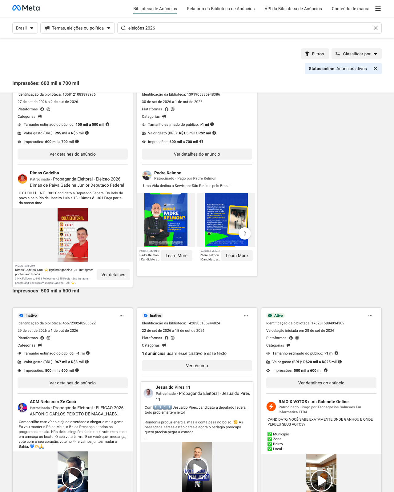
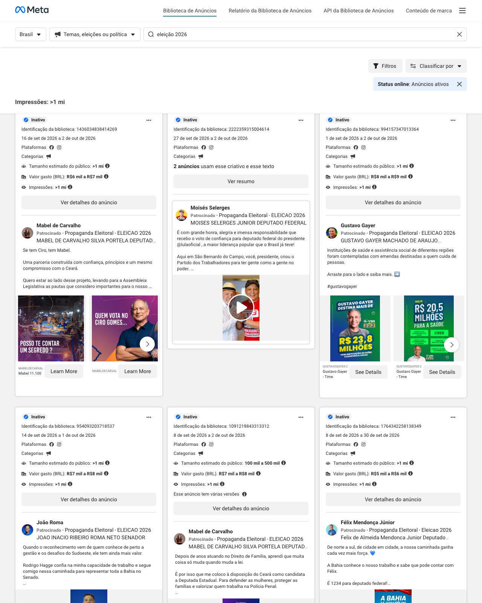
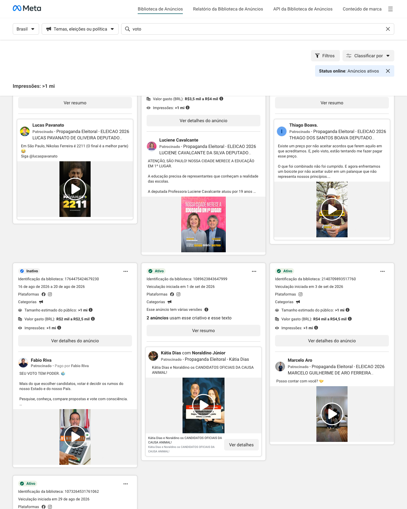
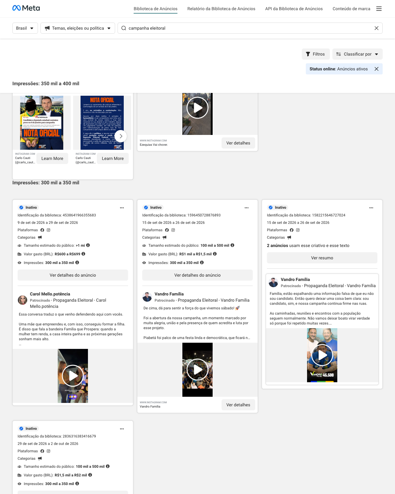
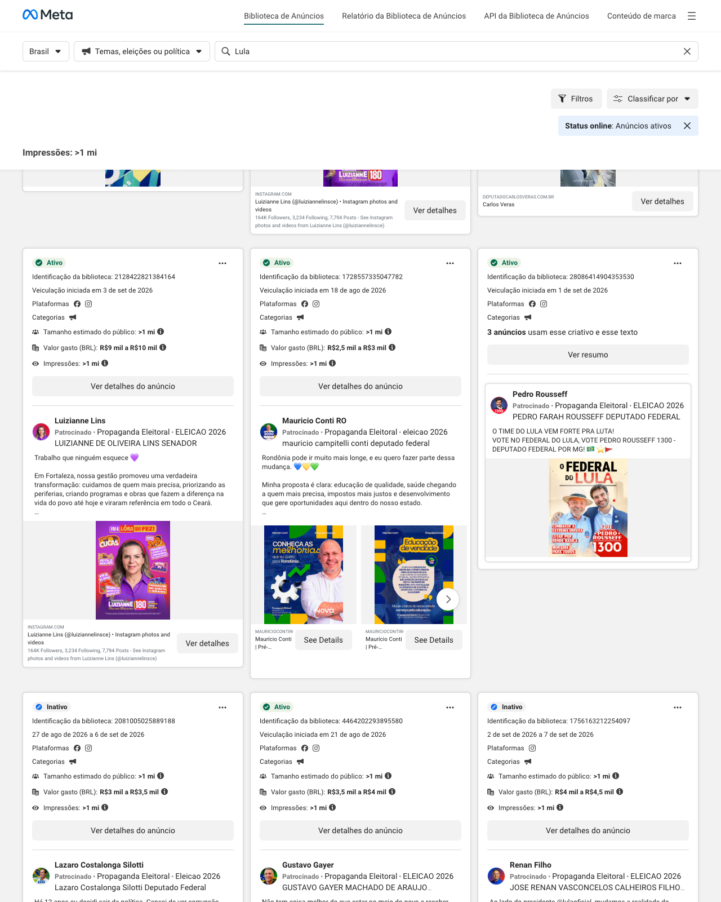
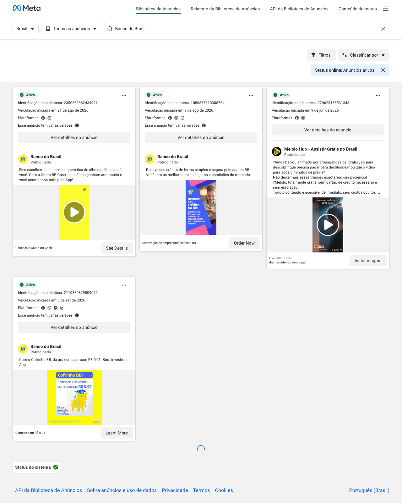
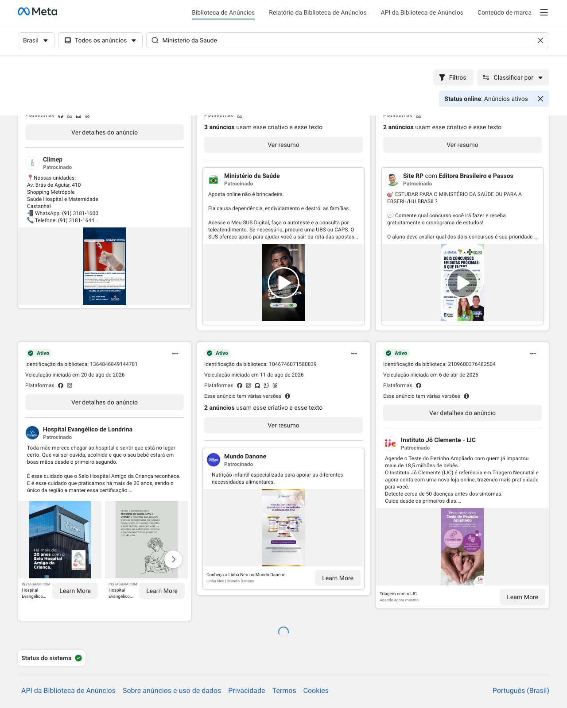
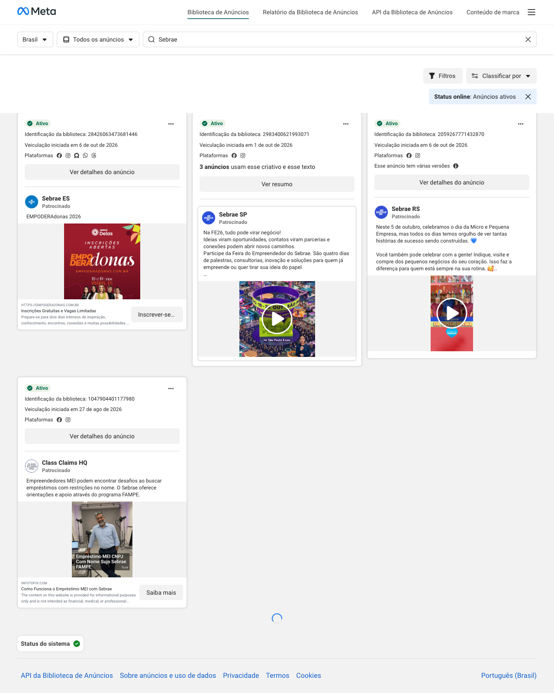
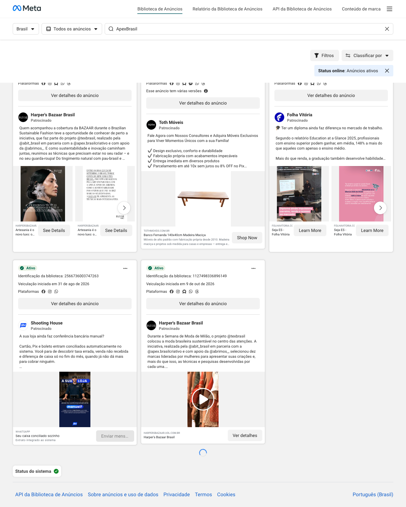

① Evento central: eleições brasileiras no 3º trimestre 重点事件：Q3 巴西大选
Quem anuncia e quanto gasta — dados oficiais 竞选广告投放榜 · 官方精确数据
R$ 60.149.369
US$ 11,734,402
Gasto em anúncios eleitorais竞选广告花费
R$ 165.447.643
US$ 32,276,799
Total da biblioteca (inclui temáticos)全库含议题广告
3.474
Candidatos anunciando在投候选人
205.798
Anúncios eleitorais竞选广告条数
Fonte: Relatório oficial da Biblioteca de Anúncios · janela Últimos 90 dias
(2026-06-08 → 2026-09-05) · valores exatos, não faixas · câmbio US$ 1 = R$ 5.1259
数据源：Meta 广告库官方报告，精确金额（非区间）；窗口 2026-06-08 → 2026-09-05
Corrida presidencial总统候选人投放榜 · 10 位
10 candidaturas somando R$ 1.750.743 — 2.9% do gasto eleitoral.
10 位总统/副总统候选人，合计 R$ 1.750.743，占竞选广告总花费的 2.9%。
R$ 1.155.823 · $225,487
Onde está o dinheiro: por cargo按竞选职位
DEPUTADO FEDERAL联邦众议员 · 1463 cand.
R$ 24.175.878 · $4,716,416
DEPUTADO ESTADUAL州众议员 · 1720 cand.
R$ 14.423.566 · $2,813,860
GOVERNADOR州长 · 77 cand.
R$ 9.812.248 · $1,914,249
SENADOR参议员 · 129 cand.
R$ 9.318.592 · $1,817,943
PRESIDENTE总统 · 9 cand.
R$ 1.680.463 · $327,838
DEPUTADO DISTRITAL联邦区议员 · 70 cand.
R$ 637.931 · $124,452
VICE-PRESIDENTE副总统 · 1 cand.
R$ 70.280 · $13,711
VICE-GOVERNADOR副州长 · 5 cand.
R$ 30.411 · $5,933
Maiores anunciantes投放金额 Top 15
R$ 697.895 · $136,151
R$ 670.824 · $130,870
R$ 524.195 · $102,264
R$ 384.346 · $74,981
R$ 375.247 · $73,206
R$ 373.070 · $72,781
Dois links por candidato — Nome ↗ = ativos agora (sem filtro de data);
«no período» = a janela 2026-06-08 → 2026-09-05, mesma base do valor em R$.
每位候选人两个链接：点姓名→该主页现在在投的广告；点「no período」→窗口内全部（与金额同口径，含已停投）。
三点注意：① 金额是窗口累计，含期间已跑完的广告，所以页面上多数标 Inativo 属正常； ② Report 数据截至 2026-09-05，候选人仍在持续上新广告，最新在投的不计入本表金额； ③ 页面条数通常多于本表——页面列该主页所有出资方的广告，本表只算候选人竞选委员会那部分（政党出资走 Fundo Partidário，不计入）。
三点注意：① 金额是窗口累计，含期间已跑完的广告，所以页面上多数标 Inativo 属正常； ② Report 数据截至 2026-09-05，候选人仍在持续上新广告，最新在投的不计入本表金额； ③ 页面条数通常多于本表——页面列该主页所有出资方的广告，本表只算候选人竞选委员会那部分（政党出资走 Fundo Partidário，不计入）。
Criativos e formatos — amostra ad-a-ad 创意与形式 · 逐条抓取样本
Esta seção mostra como são os anúncios (criativo, texto, formato). Para valores e ranking, veja a seção acima.
本节用于看广告长什么样（创意、文案、形式）。金额与排名以上方投放榜为准。
🎨 Composição da amostra de criativos
创意样本构成 —— 203 anúncios coletados; termos: eleições 2026 / eleição 2026 / voto / campanha eleitoral / Lula / Tarcísio / Flávio Bolsonaro / Ciro Gomes / Ratinho Junior / Ronaldo Caiado / PT / PL / PSDB / União Brasil / Progressistas / Republicanos / Governo Federal
本期抓取 203 条，用于看创意与文案，不用于金额结论
- Ativos / inativos在投·已停: 145 ativos · 58 inativos;
103 pagadores distintos
145 条在投 · 58 条已停；共涉及 103 个不同出资方
- Tipos de anunciante广告主类型分布: Partidos 政党 1 · Comitês eleitorais (candidatos) 候选人竞选委员会 191 · Outros 其他 11
- Período时间跨度: 2025-10 → 2026-09
- Observações特征观察: justiça eleitoral (TSE/TRE) e órgãos de governo concentram anúncios de
orientação ao voto e avisos de conformidade; partidos e candidatos concentram anúncios temáticos.
选举司法(TSE/TRE)与政府机构以「投票指引/合规告知」类广告为主；政党/候选人以议题宣传为主。
⚠️ 本样本为 17 个关键词 × 每词上限的便利抽样，覆盖率不足全库 1%，
不可用于推断市场规模或排名；金额与排名见上方「投放榜」（官方 Report 全量精确数据）。
Criativos e posicionamentos (grade da Biblioteca de Anúncios)创意/广告位截图





Gustavo GayerAtivoAnúncio temático · valor não divulgado 议题类·金额未公开
Pago por 出资方: ELEICAO 2026 GUSTAVO GAYER MACHADO DE ARAUJO SENADOR
Para Presidente, vote Flávio Bolsonaro 22 🇧🇷 Para Senador por Goiás, vote Gustavo Gayer 222 🇧🇷 0:00 / 1:26
选总统，投弗拉维奥·博索纳罗 22 🇧🇷 选戈亚斯州参议员，投古斯塔沃·盖耶尔 222 🇧🇷 0:00 / 1:26
📕 Anúncio temático/social: o Meta divulga gasto, impressões e público apenas para anúncios eleitorais declarados — para estes, não divulga (não é falha de dados).
议题/社会类广告：Meta 仅对已申报的竞选广告公开花费/展示量/受众，此类广告不公开（并非数据缺失）。
Bancada Feminista do PSOLAtivoAnúncio eleitoral declarado 已申报竞选广告 · 💰R$7 mil a R$8 mil
Pago por 出资方: Eleicao 2026 Paula Nunes dos Santos Deputado Estadual
A luta das mulheres pode construir um novo Brasil e um novo estado de SP! Junte-se a nós nessa caminhada ✊🏾✨️ Para deputada estadual: Bancada Feminista 5️⃣0️⃣.0️⃣0️⃣0️⃣ 0:00 / 1:49
女性的斗争可以建设一个新的巴西和新的圣保罗州！加入我们的征程吧 ✊🏾✨️ 州议员请投：女权党团 5️⃣0️⃣.0️⃣0️⃣0️⃣ 0:00 / 1:49
Benny BriollyAtivoAnúncio eleitoral declarado 已申报竞选广告 · 💰R$6 mil a R$7 mil
Pago por 出资方: Campanha Benny Briolly 2026
EU SOU PORQUE NÓS SOMOS! ✊🏿🏳️⚧️ Quem é Benny Briolly? Mulher preta, trans, cria da favela e de Axé, a primeira mulher trans eleita e reeleita parlamentar no estado do Rio de Janeiro. Venho da comunidade, sou cria das políticas do governo Lula, batalhei muito e segui meu propósito.
我存在，因为我们存在！✊🏿🏳️⚧️ 本尼·布里奥利是谁？黑人女性、跨性别者、贫民窟和Axé宗教文化出身，是里约热内卢州第一位当选并连任的跨性别女议员。我来自社区，是卢拉政府政策的受益者，我奋斗了很久，一直追随我的目标。
Cris MonteiroAtivoAnúncio eleitoral declarado 已申报竞选广告 · 💰R$20 mil a R$25 mil
Pago por 出资方: Eleicao 2026 Cristina Pereira Monteiro Deputado Federal
Vou fazer algo extremamente antiquado e fora de moda na política... Apresentar PROPOSTAS! Estou te enviando um PDF com todas as minhas ideias para transformar o Brasil e mudar Brasília. Compartilhe esse documento com seus amigos e familiares e acompanhe meu trabalho em parceria com o futuro Deputado Estadual Gerson Pires.
我要做一件在政坛极其老派、过时的事……那就是拿出方案！我正在给你发送一份PDF，里面包含我改变巴西、改造巴西利亚的全部想法。请把这份文件分享给你的朋友和家人，并关注我与未来州议员热尔松·皮雷斯的合作工作。
Simone TebetAtivoAnúncio eleitoral declarado 已申报竞选广告 · 💰R$4 mil a R$4,5 mil
Pago por 出资方: ELEICAO 2026 SIMONE NASSAR TEBET ROCHA SENADOR
Se você é de São Paulo, eu preciso da sua ajuda! 🫵🏻 📲 Curta, comente, compartilhe e reposte nossos conteúdos nas redes sociais para levar nossa mensagem para mais pessoas! Simone Senadora 4️⃣0️⃣0️⃣✅ Essa é uma mensagem da Coligação Desperta São Paulo: PDT e PSB / Federação Brasil da Esperança: PT, PC DO B e PV / Federação PSOL e Rede. CNPJ 68.581.880/0001-70 #Simone400 #SimoneSenadora 0:00 / 0:42
如果你来自圣保罗，我需要你的帮助！🫵🏻 📲 请点赞、评论、分享并在社交媒体上转发我们的内容，让更多人看到我们的信息！西蒙娜参议员 4️⃣0️⃣0️⃣✅ 这是“唤醒圣保罗”联盟发布的消息：PDT和PSB / 巴西希望联盟：PT、PC do B和PV / PSOL和Rede联盟。CNPJ 68.581.880/0001-70 #Simone400 #SimoneSenadora 0:00 / 0:42
Leonel De Esquerda - Você É De Esquerda E Não SabeAtivoAnúncio eleitoral declarado 已申报竞选广告 · 💰R$1,5 mil a R$2 mil
Pago por 出资方: ELEICAO 2026 LEONEL QUERINO DA SILVA NETO DEPUTADO ESTADUAL
É time do Lula. É time do Brasil. ✊ LEONEL de Esquerda 13013 LINDBERGH 1300 0:00 / 1:25
这是卢拉的队伍。这是巴西的队伍。✊ 莱昂内尔（左翼）13013 林德伯格 1300 0:00 / 1:25
Paulo F. Marinho JrAtivoAnúncio eleitoral declarado 已申报竞选广告 · 💰R$15 mil a R$20 mil
Pago por 出资方: ELEICAO 2026 PAULO CELSO FONSECA MARINHO JUNIOR DEPUTADO FEDERAL
Gosto dessas conversas com os jovens porque elas me permitem mostrar um pouco mais de quem eu sou além da política. É nesses momentos que a gente troca ideias, conhece diferentes perspectivas e cria espaço para uma conversa verdadeira. É por Caxias, pelo Maranhão e pelo futuro que queremos construir juntos. 💙 #PauloMarinhoJr #ÉFederal #2255 0:00 / 0:59
我喜欢和年轻人这样交谈，因为这让我能在政治之外展现更多真实的自己。正是在这样的时刻，我们交流想法、了解不同视角，为真诚对话创造空间。为了卡希亚斯，为了马拉尼昂，为了我们想共同建设的未来。💙 #保罗·马里尼奥·朱尼奥尔 #联邦议员 #2255 0:00 / 0:59
Rosa AmorimAtivoAnúncio eleitoral declarado 已申报竞选广告 · 💰R$2 mil a R$2,5 mil
Pago por 出资方: Eleicao 2026 Rosa Karina Souza de Amorim Deputado Federal
Erika Hilton é 1303! É uma honra contar com o apoio de @hilton_erika, uma parlamentar combativa e que tem feito um mandato exemplar na Câmara dos Deputados. É das mãos de uma bicha e de uma travesti que vamos ter uma das conquistas mais importantes da classe trabalhadora: o fim da escala 6x1.
埃里卡·希尔顿就是1303！很荣幸得到@hilton_erika的支持，她是一位战斗精神十足的议员，在众议院做出了堪称典范的履职表现。正是从一个男同和一个跨性别女性的手中，我们将迎来工人阶级最重要的胜利之一：废除6x1工作制。
Conectas Direitos HumanosAtivoAnúncio eleitoral declarado 已申报竞选广告 · 💰R$6 mil a R$7 mil
Pago por 出资方: Conectas Direitos Humanos
Nesta quinta-feira (05), a Conectas participou da audiência pública promovida pelo Tribunal Superior Eleitoral sobre as resoluções que regerão as Eleições de 2026. Em sua intervenção, Gabriel Sampaio, diretor de Incidência e Litigância da Conectas, destacou as propostas da organização para a Resolução de Propaganda Eleitoral, ressaltando medidas essenciais para a preservação da integridade do…
本周四（5日），Conectas参加了最高选举法院就2026年选举相关决议举行的公开听证会。Conectas的倡导与诉讼总监加布里埃尔·桑帕约在发言中提出了该组织对选举宣传决议的建议，强调了维护选举公正性的关键措施……
Rodrigo PatriotaAtivoAnúncio eleitoral declarado 已申报竞选广告 · 💰R$5 mil a R$6 mil
Pago por 出资方: Eleições 2026 Rodrigo Patriota Pires Deputado Estadual
Rodrigo Patriota Deputado Estadual PE Trabalho no Hospital da Restauração HR Coordenador do CIATox SES PE Já sou um político sem mandato, trabalho na saúde e pela saúde, ensino saúde. A classe dos profissionais está no meu sangue 🅰️ Equipamentos 🚑🚁🩺 Salário 💶 Carga horária ⌚ ⏳ Condições de trabalho 🏥🏨🧑🏻⚕️ Plano de saúde - Sassepe Aposentadoria 🧓🏻🧓🏻 Esses e outros assuntos vou trabalhar nos…
罗德里戈·帕特里奥塔 伯南布哥州议员 在康复医院HR工作 CIATox SES PE协调员 我已经是没有任期的政治家，我在卫生领域工作、为卫生而战、教授卫生知识。专业人员的阶层流淌在我的血液里 🅰️ 设备 🚑🚁🩺 工资 💶 工时 ⌚ ⏳ 工作条件 🏥🏨🧑🏻⚕️ 健康保险 - Sassepe 退休 🧓🏻🧓🏻 这些及其他议题我将在……
Thaysa LippyAtivoAnúncio eleitoral declarado 已申报竞选广告 · 💰R$2 mil a R$2,5 mil
Pago por 出资方: ELEICAO 2026 THAYSA LIPPY DE SOUZA FLORENCIO DEPUTADO FEDERAL
Nas últimas duas eleições, o Amazonas ficou de fora da representação feminina no Congresso Nacional. As mulheres amazonenses merecem ter uma voz em Brasília que saiba o que é ser mulher, que conheça de perto os desafios do dia a dia que só nós sabemos enfrentar. Isso precisa mudar. E eu quero ser essa mudança. 🙏 Te convido a conhecer o nosso trabalho aqui no perfil e dar esse voto de confiança.
在过去两次选举中，亚马孙州在国会中没有任何女性代表。亚马孙的女性值得在巴西利亚拥有一个声音——一个懂得做女人意味着什么、深知只有我们才能面对的日常挑战的声音。这必须改变。而我想成为这个改变。🙏 我邀请你在主页上了解我们的工作，并给予这份信任。
Ciro GomesAtivoAnúncio eleitoral declarado 已申报竞选广告 · 💰R$10 mil a R$15 mil
Pago por 出资方: ELEICAO 2026 CIRO FERREIRA GOMES GOVERNADOR
Vamos revolucionar a segurança pública do Ceará e tirar o medo do coração do cearense e colocá-lo na cabeça dos bandidos. #CiroGovernador45 💙 - Propaganda eleitoral - Eleição 2026 Ciro Ferreira Gomes, governador, inscrito no CNPJ sob n. 68.237.309/0001-33. Coligação Unir para Mudar: Federação PSDB Cidadania / Federação União Progressista (UNIÃO BRASIL/PROGRESSISTAS)/DC/ AVANTE/PL 0:00 / 0:55
让我们彻底改革塞阿拉州的公共安全，把恐惧从塞阿拉人民心中驱除，把它塞进罪犯的脑子里。#西罗州长45 💙 - 选举广告 - 2026年选举 西罗·费雷拉·戈麦斯，州长，CNPJ注册号 68.237.309/0001-33。联盟“团结求变”：PSDB公民党联盟 / 进步团结联盟（联合巴西/进步党）/DC/ AVANTE/PL 0:00 / 0:55
Rubens JrAtivoAnúncio temático · valor não divulgado 议题类·金额未公开
Pago por 出资方: ELEICAO 2026 RUBENS PEREIRA E SILVA JUNIOR DEPUTADO FEDERAL
Duas palavras definem o que eu acredito na política: coerência e esperança. Coerência é ficar do mesmo lado do rio a vida inteira. Foi isso que eu fiz nesses 20 anos de caminhada, e é isso que eu vou continuar fazendo: SEMPRE do lado do povo, com o orgulho de ser o deputado federal do Lula no Maranhão. Mas coerência sozinha não basta. Eu não abro mão da esperança.
有两个词定义了我对政治的信念：一致性和希望。一致性就是一辈子站在河的同一岸。这是我在这20年历程中所做的，也是我将继续做的：永远站在人民一边，作为卢拉在马拉尼昂州的联邦众议员而自豪。但仅有一致性是不够的。我不会放弃希望。
📕 Anúncio temático/social: o Meta divulga gasto, impressões e público apenas para anúncios eleitorais declarados — para estes, não divulga (não é falha de dados).
议题/社会类广告：Meta 仅对已申报的竞选广告公开花费/展示量/受众，此类广告不公开（并非数据缺失）。
Deputado Federal Dr. Allan GarcêsAtivoAnúncio eleitoral declarado 已申报竞选广告 · 💰R$10 mil a R$15 mil
Pago por 出资方: ELEICAO 2026 ALLAN QUADROS GARCES DEPUTADO FEDERAL
Receber o reconhecimento do deputado federal Sargento Fahur, uma das vozes mais firmes na defesa da segurança pública brasileira, é motivo de muita honra. Durante meu mandato, mantive uma posição clara: o cidadão de bem precisa ser protegido, nossas forças de segurança precisam ser valorizadas e quem escolhe o caminho do crime deve responder por seus atos.
获得联邦众议员法胡尔中士的认可——他是巴西公共安全捍卫中最坚定的声音之一——是我莫大的荣幸。在我的任期内，我立场明确：守法公民需要受到保护，我们的安全部队需要得到重视，而选择犯罪道路的人必须为自己的行为负责。
Ciro GomesAtivoAnúncio eleitoral declarado 已申报竞选广告 · 💰R$15 mil a R$20 mil
Pago por 出资方: ELEICAO 2026 CIRO FERREIRA GOMES GOVERNADOR
Eu agradeço muito aos eleitores do Lula, agradeço muito aos eleitores do Flávio, agradeço muito aos eleitores do Zema, agradeço muito aos eleitores do Ronaldo Caiado, agradeço muito aos eleitores do Renan Santos e do Augusto Cury. O que eu quero é que cada cearense vote com liberdade, com esperança. Por que? Porque eu já saí da disputa nacional.
我非常感谢卢拉的选民，非常感谢弗拉维奥的选民，非常感谢泽马的选民，非常感谢罗纳尔多·卡亚多的选民，非常感谢雷南·桑托斯和奥古斯托·库里的选民。我希望每一位塞阿拉人自由地、带着希望地投票。为什么？因为我已经退出了全国角逐。
Deputado Federal Dr. Allan GarcêsAtivoAnúncio eleitoral declarado 已申报竞选广告 · 💰R$60 mil a R$70 mil
Pago por 出资方: ELEICAO 2026 ALLAN QUADROS GARCES DEPUTADO FEDERAL
Obrigado pelo seu testemunho Pastor! . . 0:00 / 0:10
感谢你的见证，牧师！. . 0:00 / 0:10
Fábio TeruelAtivoAnúncio temático · valor não divulgado 议题类·金额未公开
Pago por 出资方: ELEICAO 2026 FABIO EDUARDO DE OLIVEIRA TERUEL DEPUTADO FEDERAL
Guarde esse número: 1580. É o primeiro que a urna pede no dia 4 de outubro — deputado federal. Fábio Teruel, Deputado Federal por São Paulo. 🙏 0:00 / 1:12
记住这个号码：1580。这是10月4日投票机上第一个要输入的号码——联邦众议员。法比奥·特鲁埃尔，圣保罗联邦众议员。🙏 0:00 / 1:12
📕 Anúncio temático/social: o Meta divulga gasto, impressões e público apenas para anúncios eleitorais declarados — para estes, não divulga (não é falha de dados).
议题/社会类广告：Meta 仅对已申报的竞选广告公开花费/展示量/受众，此类广告不公开（并非数据缺失）。
Moisés SelergesAtivoAnúncio temático · valor não divulgado 议题类·金额未公开
Pago por 出资方: ELEICAO 2026 MOISES SELERGES JUNIOR DEPUTADO FEDERAL
É uma grande honra, alegria e imensa responsabilidade que recebo o voto de confiança para deputado federal do presidente @lulaoficial , a maior liderança popular que o Brasil já teve! Aqui em São Bernardo do Campo, você, presidente, criou o Partido dos Trabalhadores para ter gente como a gente no poder.
收到总统卢拉对我竞选联邦众议员的信任投票，这是巨大的荣誉、喜悦和沉甸甸的责任。卢拉是巴西有史以来最伟大的民众领袖！总统先生，正是在圣贝尔纳多-杜坎普，您创建了劳工党，让像我们这样的普通人也能掌握权力。
📕 Anúncio temático/social: o Meta divulga gasto, impressões e público apenas para anúncios eleitorais declarados — para estes, não divulga (não é falha de dados).
议题/社会类广告：Meta 仅对已申报的竞选广告公开花费/展示量/受众，此类广告不公开（并非数据缺失）。
TinelaonaareaAtivoAnúncio temático · valor não divulgado 议题类·金额未公开
Pago por 出资方: ELEICAO 2026 GILBERTO DA VEIGA PINTO DEPUTADO FEDERAL
Não podemos continuar deixando a vida da nossa categoria ser decidida por quem não conhece a realidade das estradas, não vive os desafios do trecho e não entende o dia a dia do caminhoneiro. Minas Gerais precisa de uma voz que conheça essa realidade de verdade. Uma voz que venha da estrada e esteja em Brasília para representar a nossa categoria.
我们不能继续让那些不了解公路现实、不曾经历路段挑战、不懂卡车司机日常生活的人来决定我们行业的命运。米纳斯吉拉斯州需要一个真正了解这种现实的声音。一个来自公路、能到巴西利亚代表我们行业的声音。
📕 Anúncio temático/social: o Meta divulga gasto, impressões e público apenas para anúncios eleitorais declarados — para estes, não divulga (não é falha de dados).
议题/社会类广告：Meta 仅对已申报的竞选广告公开花费/展示量/受众，此类广告不公开（并非数据缺失）。
Célio StudartAtivoAnúncio temático · valor não divulgado 议题类·金额未公开
Pago por 出资方: ELEICAO 2026 CELIO STUDART BARBOSA DEPUTADO FEDERAL
COMEÇOU! Mais uma vez colocamos nossa vida, estudos, VOCAÇÃO e luta em favor do nosso CEARÁ! Vocês nos verão nas ruas, no litoral, nas serras de todo o nosso estado levando não só a defesa linda que fazemos pelos que não têm voz: animais, crianças, autistas, idosos e tantos que são fortalecidos por nossas AÇÕES diárias, mas mais que isso: REPRESENTAMOS a opção REAL de voto de consciência do…
开始了！我们再次将生命、学业、使命和斗争奉献给我们的塞阿拉州！你们将在街头、海岸、全州的山间看到我们，不仅带去我们为无声者——动物、儿童、自闭症患者、老人以及众多因我们日常行动而获得力量的人——所做的美丽捍卫，更重要的是：我们代表着凭良心投票的真正选择……
📕 Anúncio temático/social: o Meta divulga gasto, impressões e público apenas para anúncios eleitorais declarados — para estes, não divulga (não é falha de dados).
议题/社会类广告：Meta 仅对已申报的竞选广告公开花费/展示量/受众，此类广告不公开（并非数据缺失）。
Katiuscia ManteliAtivoAnúncio eleitoral declarado 已申报竞选广告 · 💰R$7 mil a R$8 mil
Pago por 出资方: ELEICAO 2026 KATIUSCIA MANTELI ANDRADE DE TOLEDO DEPUTADO FEDERAL
Receber o apoio de quem conhece Mato Grosso, trabalha pelos municípios e acredita na política feita com responsabilidade fortalece ainda mais essa caminhada. Obrigada, Max Russi, pela confiança e pelo apoio ao nosso projeto. Seguimos juntos, com trabalho, presença e compromisso com as pessoas. Para deputada Federal, Katiuscia, 2080 e Para deputado estadual, Max Russi 20000.
获得了解马托格罗索州、为各市镇工作并相信以负责任态度开展政治的人的支持，让这段征程更加坚定。感谢马克斯·鲁西的信任和对我们计划的支持。我们继续携手前行，以工作、亲临和对他人的承诺为伴。联邦议员候选人卡秋斯卡，编号2080；州议员候选人马克斯·鲁西，编号20000。
Gustavo GayerAtivoAnúncio temático · valor não divulgado 议题类·金额未公开
Pago por 出资方: ELEICAO 2026 GUSTAVO GAYER MACHADO DE ARAUJO SENADOR
Para Presidente, vote Flávio Bolsonaro 22 🇧🇷 Para Senador por Goiás, vote Gustavo Gayer 222 🇧🇷 0:00 / 1:26
选总统，投弗拉维奥·博索纳罗 22 🇧🇷 选戈亚斯州参议员，投古斯塔沃·盖耶尔 222 🇧🇷 0:00 / 1:26
📕 Anúncio temático/social: o Meta divulga gasto, impressões e público apenas para anúncios eleitorais declarados — para estes, não divulga (não é falha de dados).
议题/社会类广告：Meta 仅对已申报的竞选广告公开花费/展示量/受众，此类广告不公开（并非数据缺失）。
Rosana ValleAtivoAnúncio temático · valor não divulgado 议题类·金额未公开
Pago por 出资方: ELEICAO 2026 ROSANA DE OLIVEIRA VALLE DEPUTADO FEDERAL
Não tenho medo de dizer o que penso! 🗣️ Se você acredita que o Brasil precisa de pessoas de coragem para defender os nossos ideais, venha comigo! 🤝🇧🇷 Não dá pra confiar em quem fica em cima do muro! 0:00 / 1:20
我不怕说出我的想法！🗣️ 如果你相信巴西需要有勇气的人来捍卫我们的理想，那就跟我来吧！🤝🇧🇷 不能信任那些骑墙观望的人！0:00 / 1:20
📕 Anúncio temático/social: o Meta divulga gasto, impressões e público apenas para anúncios eleitorais declarados — para estes, não divulga (não é falha de dados).
议题/社会类广告：Meta 仅对已申报的竞选广告公开花费/展示量/受众，此类广告不公开（并非数据缺失）。
Bancada Feminista do PSOLAtivoAnúncio temático · valor não divulgado 议题类·金额未公开
Pago por 出资方: Eleicao 2026 Paula Nunes dos Santos Deputado Estadual
A luta das mulheres pode construir um novo Brasil e um novo estado de SP! Junte-se a nós nessa caminhada ✊🏾✨️ Para deputada estadual: Bancada Feminista 5️⃣0️⃣.0️⃣0️⃣0️⃣ 0:00 / 1:49
女性的斗争可以建设一个新的巴西和新的圣保罗州！加入我们的征程吧 ✊🏾✨️ 州议员请投：女权党团 5️⃣0️⃣.0️⃣0️⃣0️⃣ 0:00 / 1:49
📕 Anúncio temático/social: o Meta divulga gasto, impressões e público apenas para anúncios eleitorais declarados — para estes, não divulga (não é falha de dados).
议题/社会类广告：Meta 仅对已申报的竞选广告公开花费/展示量/受众，此类广告不公开（并非数据缺失）。
Sóstenes CavalcanteAtivoAnúncio temático · valor não divulgado 议题类·金额未公开
Pago por 出资方: Sóstenes Cavalcante
0:00 / 0:31
0:00 / 0:31
📕 Anúncio temático/social: o Meta divulga gasto, impressões e público apenas para anúncios eleitorais declarados — para estes, não divulga (não é falha de dados).
议题/社会类广告：Meta 仅对已申报的竞选广告公开花费/展示量/受众，此类广告不公开（并非数据缺失）。
Rosana ValleAtivoAnúncio eleitoral declarado 已申报竞选广告 · 💰R$3,5 mil a R$4 mil
Pago por 出资方: ELEICAO 2026 ROSANA DE OLIVEIRA VALLE DEPUTADO FEDERAL
Nossa parceria pra Sorocaba! Minha parceria com o deputado estadual Danilo Balas reforça meu trabalho por Sorocaba. Já destinei um milhão e meio de reais para a saúde da cidade! Precisamos do seu apoio para que possamos continuar. 0:00 / 1:17
我们与索罗卡巴的伙伴关系！我与州议员达尼洛·巴拉斯合作，加强了我为索罗卡巴所做的工作。我已经为这座城市拨付了一百五十万雷亚尔的医疗资金！我们需要您的支持才能继续下去。0:00 / 1:17
Aava SantiagoAtivoAnúncio eleitoral declarado 已申报竞选广告 · 💰R$10 mil a R$15 mil
Pago por 出资方: ELEICAO 2026 AAVA SANTIAGO AGUIAR DEPUTADO FEDERAL
O RAIO AAVAFICADOR PASSOU PELA RUA DO LAZER É claro que uma das nossas primeiras ações de mobilização não poderia acontecer em outro lugar. No Centro, conheço cada esquina e sei o quanto essa região histórica da cidade representa o coração da nossa capital. E, na Rua do Lazer, esse coração pulsa ainda mais forte, entre cultura, encontros e a vida noturna que resiste.
“震撼之雷”巡游经过休闲街 当然，我们首批动员活动之一不可能在其他地方举行。在市中心，我熟悉每一个街角，深知这座历史城区代表着我们首府的心脏。而在休闲街，这颗心脏跳动得更加有力——在文化、相聚和不屈的夜生活之间。
Benny BriollyAtivoAnúncio eleitoral declarado 已申报竞选广告 · 💰R$2,5 mil a R$3 mil
Pago por 出资方: Campanha Benny Briolly 2026
EU SOU PORQUE NÓS SOMOS! ✊🏿🏳️⚧️ Quem é Benny Briolly? Mulher preta, trans, cria da favela e de Axé, a primeira mulher trans eleita e reeleita parlamentar no estado do Rio de Janeiro. Venho da comunidade, sou cria das políticas do governo Lula, batalhei muito e segui meu propósito.
我存在，因为我们存在！✊🏿🏳️⚧️ 本尼·布里奥利是谁？黑人女性、跨性别者、贫民窟和Axé宗教文化出身，是里约热内卢州第一位当选并连任的跨性别女议员。我来自社区，是卢拉政府政策的受益者，我奋斗了很久，一直追随我的目标。
Cristiane BrittoAtivoAnúncio eleitoral declarado 已申报竞选广告 · 💰R$2 mil a R$2,5 mil
Pago por 出资方: ELEICAO 2026 CRISTIANE RODRIGUES BRITTO DEPUTADO FEDERAL
É Cris Britto. Aescolha da Damares. A Ministra do Bolsonaro. a deputada federal das mulheres e dos homens conservadores do DF. Cris Britto é 1022. Dez do Republicanos, meu partido,, e 22 do nosso eterno presidente Bolsonaro. Bora espalhar nosso número, nossa marca, nossa candidatura! A campanha começou 🔥🙌🏻 PROPAGANDA ELEITORAL: | CNPJ: 68.441.910/0001-43 0:00 / 0:32
我是克里斯·布里托。达马雷斯的选择。博尔索纳罗部长的选择。联邦区保守男女的联邦众议员。克里斯·布里托是1022。10代表共和党，我的党，22代表我们永恒的总统博尔索纳罗。让我们传播我们的号码、我们的品牌、我们的候选人资格！竞选已经开始🔥🙌🏻 选举宣传：| 税号：68.441.910/0001-43 0:00 / 0:32
Fernando PifferAtivoAnúncio temático · valor não divulgado 议题类·金额未公开
Pago por 出资方: ELEICAO 2026 FERNANDO JOSE PIFFER DEPUTADO ESTADUAL
*QUEM CUIDA DA SAÚDE DE SP TODOS OS DIAS TAMBÉM PRECISA SER VALORIZADO.* Urgência não espera. E quem está na linha de frente salvando vidas, acolhendo famílias e fazendo o atendimento acontecer também não pode esperar por reconhecimento. O *Incentivo Linha de Frente SP* nasce com esse propósito: valorizar os profissionais que fazem a urgência e a emergência funcionarem todos os dias.
*每天守护圣保罗健康的人，也需要被珍视。* 急诊不等人。而那些奋战在一线拯救生命、接纳家庭、确保救治顺利进行的人，同样不能等待认可。*“圣保罗一线激励计划”* 正是为此而生：珍视那些让急诊和急救每天正常运转的专业人员。
📕 Anúncio temático/social: o Meta divulga gasto, impressões e público apenas para anúncios eleitorais declarados — para estes, não divulga (não é falha de dados).
议题/社会类广告：Meta 仅对已申报的竞选广告公开花费/展示量/受众，此类广告不公开（并非数据缺失）。
Coronel Alberto FeitosaAtivoAnúncio eleitoral declarado 已申报竞选广告 · 💰R$10 mil a R$15 mil
Pago por 出资方: ELEICAO 2026 ALBERTO JORGE DO NASCIMENTO FEITOSA DEPUTADO ESTADUAL
URGENTE! 🚨 A lei precisa valer para todos! O TSE admitiu a ação que pede a inelegibilidade de Lula e Alckmin pelo desfile de Carnaval que homenageou o presidente e teria recebido recursos públicos. Não se trata de perseguir a cultura, mas de investigar se houve abuso de poder e uso do dinheiro do povo para promoção eleitoral.
紧急！🚨 法律必须适用于所有人！高等选举法院已受理要求判定卢拉和阿尔克明无被选举权的诉讼，事因狂欢节游行向总统致敬并涉嫌使用公共资金。这不是针对文化，而是调查是否存在滥用权力和使用人民钱财进行选举宣传的行为。
Roberto Monteiro PaiAtivoAnúncio eleitoral declarado 已申报竞选广告 · 💰R$8 mil a R$9 mil
Pago por 出资方: ELEICAO 2026 ROBERTO LUIZ RODRIGUES DE OLIVEIRA DEPUTADO FEDERAL
Você não pode deixar isso acontecer! Não deixem as fiscalizações acabarem! Queremos junto com Gabriel Monteiro continuar fiscalizando, vote @robertomonteiropai deputado federal 2250 e @gisellemonteiro.br deputada estadual 22500 Não deixem as fiscalizações pararem. Junto com meu filho, Gabriel Monteiro, vamos fiscalizar tudo. Para isso, precisamos que você VOTE.
你不能让这种事发生！别让监督工作被终结！我们要和加布里埃尔·蒙泰罗一起继续监督，请投票给@robertomonteiropai 联邦众议员2250，以及@gisellemonteiro.br 州议员22500。别让监督停下来。和我儿子加布里埃尔·蒙泰罗一起，我们要监督一切。为此，我们需要你投票。
Benny BriollyAtivoAnúncio eleitoral declarado 已申报竞选广告 · 💰R$1,5 mil a R$2 mil
Pago por 出资方: Campanha Benny Briolly 2026
EU SOU PORQUE NÓS SOMOS! ✊🏿🏳️⚧️ Quem é Benny Briolly? Mulher preta, trans, cria da favela e de Axé, a primeira mulher trans eleita e reeleita parlamentar no estado do Rio de Janeiro. Venho da comunidade, sou cria das políticas do governo Lula, batalhei muito e segui meu propósito.
我存在，因为我们存在！✊🏿🏳️⚧️ 本尼·布里奥利是谁？黑人女性、跨性别者、贫民窟和Axé宗教文化出身，是里约热内卢州第一位当选并连任的跨性别女议员。我来自社区，是卢拉政府政策的受益者，我奋斗了很久，一直追随我的目标。
Dr. FranciscoAtivoAnúncio temático · valor não divulgado 议题类·金额未公开
Pago por 出资方: ELEIÇÃO 2026 FRANCISCO DE ASSIS DE OLIVEIRA COSTA DEPUTADO FEDERAL
É 1313, viu, bebê! Tá liberado! Vamos pedir voto, minha gente! #ParaTodosVerem: uma animação da nova marca e foto do deputado federal Dr Francisco para a campanha eleitoral de 2026. Há um mapa do Piauí, o texto Orgulho do Piauí. Na foto, ele está sorrindo e de camisa branca. O número 1313 em destaque. 0:00 / 0:13
是1313，宝贝！放开了！大家来拉票吧！ #供所有人查看：联邦议员弗朗西斯科博士新品牌和照片的动画，用于2026年竞选。有一张皮奥伊州地图，文字为“皮奥伊的骄傲”。照片中他微笑着，穿白衬衫。数字1313突出显示。0:00 / 0:13
📕 Anúncio temático/social: o Meta divulga gasto, impressões e público apenas para anúncios eleitorais declarados — para estes, não divulga (não é falha de dados).
议题/社会类广告：Meta 仅对已申报的竞选广告公开花费/展示量/受众，此类广告不公开（并非数据缺失）。
Cabo Wagner AlvarengaAtivoAnúncio eleitoral declarado 已申报竞选广告 · 💰R$9 mil a R$10 mil
Pago por 出资方: ELEICAO 2026 WAGNER ALVARENGA SIMOES DEPUTADO ESTADUAL
Sou militar, sou mineiro, sou de Ipatinga. Há 17 anos sirvo à população mineira como policial militar, agora quero continuar servindo, desta vez como deputado estadual. Minha candidatura não é de palanque. É de quem conhece a realidade do povo de Minas porque vive ela. Vote 22357 ✅ Coragem, por Minas! Propaganda Eleitoral | CNPJ 68.464.747/0001-34 0:00 / 0:00
我是军人，我是米纳斯人，我来自伊帕廷加。17年来，我作为一名军警为米纳斯州人民服务，现在我想继续服务，这次是作为州议员。我的候选资格不是作秀式的，而是属于了解米纳斯人民现实的人，因为我亲身经历过。投票 22357 ✅ 勇气，为了米纳斯！选举宣传 | CNPJ 68.464.747/0001-34 0:00 / 0:00
Roberto Monteiro PaiAtivoAnúncio eleitoral declarado 已申报竞选广告 · 💰R$2 mil a R$2,5 mil
Pago por 出资方: ELEICAO 2026 ROBERTO LUIZ RODRIGUES DE OLIVEIRA DEPUTADO FEDERAL
Você não pode deixar isso acontecer! Não deixem as fiscalizações acabarem! Queremos junto com Gabriel Monteiro continuar fiscalizando, vote @robertomonteiropai deputado federal 2250 e @gisellemonteiro.br deputada estadual 22500 Não deixem as fiscalizações pararem. Junto com meu filho, Gabriel Monteiro, vamos fiscalizar tudo. Para isso, precisamos que você VOTE.
你不能让这种事发生！别让监督工作被终结！我们要和加布里埃尔·蒙泰罗一起继续监督，请投票给@robertomonteiropai 联邦众议员2250，以及@gisellemonteiro.br 州议员22500。别让监督停下来。和我儿子加布里埃尔·蒙泰罗一起，我们要监督一切。为此，我们需要你投票。
Márlon ReisAtivoAnúncio eleitoral declarado 已申报竞选广告 · 💰R$2,5 mil a R$3 mil
Pago por 出资方: ELEICAО 2026 MARLON JACINTO REIS DEPUTADO FEDERAL
Eu entendo a política como uma prática diária, é por isso que fui juiz por 20 anos e estive envolvido na criação de 7 leis sem nunca ter um cargo no congresso. Decidi deixar de ser juiz e voltei a atuar como advogado voluntário e isso me deu a possibilidade de bater de frente com empresas como Carrefour, Apple, Linkedin, Zara, Nintendo.
我把政治理解为一种日常实践，正因如此我当了20年法官，并在从未担任国会职务的情况下参与了7部法律的制定。我决定不再担任法官，重新做一名志愿律师，这让我有机会与家乐福、苹果、领英、Zara、任天堂等企业正面交锋。
Ciro GomesAtivoAnúncio eleitoral declarado 已申报竞选广告 · 💰R$10 mil a R$15 mil
Pago por 出资方: ELEICAO 2026 CIRO FERREIRA GOMES GOVERNADOR
Agradeço aos eleitores do Lula, do Flávio, do Caiado e de todos os candidatos que estão comigo nessa luta pelo CEARÁ. Nosso projeto aqui é UNIR PARA MUDAR. Vamos TODOS JUNTOS! Ciro Governador 45 💙 ELEICAO 2026 CIRO FERREIRA GOMES GOVERNADOR, inscrito no CNPJ sob n.
感谢卢拉、弗拉维奥、卡亚多以及所有与我一起为塞阿拉而战的候选人的选民。我们这里的计划是“团结求变”。让我们所有人一起前进！西罗州长45 💙 2026年选举 西罗·费雷拉·戈麦斯 州长，CNPJ注册号……
Celso SabinoAtivoAnúncio eleitoral declarado 已申报竞选广告 · 💰R$7 mil a R$8 mil
Pago por 出资方: ELEICAO 2026 CELSO SABINO DE OLIVEIRA SENADOR - 68.430.638/0001-04
NA DEFESA DE QUEM MAIS PRECISA! 💙🚀 Quando a missão é levar a mensagem em defesa do Pará e da nossa gente, qualquer lugar vira palanque. Pode ser no palco, na rua ou até em cima de uma cadeira. O que importa é estar perto das pessoas e fazer essa mensagem chegar aos quatro cantos desse nosso Parazão! Quero seguir assim, de perto, conversando, ouvindo e mostrando que cada canto do Pará importa.
捍卫最需要帮助的人！💙🚀 当使命是传递捍卫帕拉州和我们人民的声音时，任何地方都可以成为讲台。无论是在舞台上、在街上，还是站在椅子上。重要的是贴近人民，让这声音传遍我们伟大的帕拉州的每一个角落！我想继续这样，近距离地交谈、倾听，证明帕拉州的每个角落都很重要。
Carlos VerasAtivoAnúncio eleitoral declarado 已申报竞选广告 · 💰R$9 mil a R$10 mil
Pago por 出资方: ELEICAO 2026 JOSE CARLOS VERAS DOS SANTOS DEPUTADO FEDERAL
Do cais ao Sertão, é ouvindo de perto as pessoas que a gente entende o que precisa ser feito. Nunca esqueci de onde vim. Sou sertanejo do Pajeú e conheço de perto as dificuldades, a força do trabalho e a luta de quem busca uma vida melhor. Estar na rua faz parte da minha trajetória e do meu jeito de fazer política.
从码头到腹地，只有走近倾听人民的声音，我们才能明白该做什么。我从未忘记自己从哪里来。我是帕热乌的腹地人，深知生活的艰辛、劳动的力量和追求更好生活者的奋斗。走上街头一直是我从政道路和风格的一部分。
João Paulo CunhaAtivoAnúncio eleitoral declarado 已申报竞选广告 · 💰R$25 mil a R$30 mil
Pago por 出资方: Propaganda Eleitoral — ELEICAO 2026 João Paulo Cunha [DEPUTADO] — CNPJ 68.373.073/0001-62
Participei do lançamento da campanha da Professora Bebel Deputada Estadual, em um lindo encontro em Piracicaba. Bebel merece ser reeleita, porque tem uma longa história de luta em defesa da educação pública de qualidade, dos professores e profissionais da educação de São Paulo.
我参加了贝贝尔教授（州议员候选人）竞选活动的启动仪式，那是在皮拉西卡巴的一场美好聚会。贝贝尔值得连任，因为她有着长期为圣保罗优质公立教育、教师和教育工作者而奋斗的历史。
Benny BriollyAtivoAnúncio temático · valor não divulgado 议题类·金额未公开
Pago por 出资方: Campanha Benny Briolly 2026
EU SOU PORQUE NÓS SOMOS! ✊🏿🏳️⚧️ Quem é Benny Briolly? Mulher preta, trans, cria da favela e de Axé, a primeira mulher trans eleita e reeleita parlamentar no estado do Rio de Janeiro. Venho da comunidade, sou cria das políticas do governo Lula, batalhei muito e segui meu propósito.
我存在，因为我们存在！✊🏿🏳️⚧️ 本尼·布里奥利是谁？黑人女性、跨性别者、贫民窟和Axé宗教文化出身，是里约热内卢州第一位当选并连任的跨性别女议员。我来自社区，是卢拉政府政策的受益者，我奋斗了很久，一直追随我的目标。
📕 Anúncio temático/social: o Meta divulga gasto, impressões e público apenas para anúncios eleitorais declarados — para estes, não divulga (não é falha de dados).
议题/社会类广告：Meta 仅对已申报的竞选广告公开花费/展示量/受众，此类广告不公开（并非数据缺失）。
Romeu ZemaAtivoAnúncio temático · valor não divulgado 议题类·金额未公开
Pago por 出资方: ELEICAO 2026 ROMEU ZEMA NETO PRESIDENTE - 68.441.891/0001-55
Nasci no trabalho. Foi trabalhando que conquistei tudo o que tenho. E é trabalhando que começo essa jornada por um Brasil LIVRE da FARRA dos intocáveis. LIVRE da GASTANÇA do Lula, e LIVRE do crime organizado. E não falo da boca pra fora. Eu fiz em Minas. Não é proposta, é resultado provado na prática. E se deu certo em Minas, vai dar certo no Brasil. Brasil sem esquema, é Zema 3️⃣0️⃣.
我生来就在工作中。我的一切都是靠工作挣来的。而我也正是靠工作，开启这段为巴西争取“摆脱特权阶层狂欢”的征程——摆脱卢拉的挥霍无度，摆脱有组织犯罪。我不是嘴上说说。我在米纳斯做到了。这不是承诺，是实践检验过的成果。如果米纳斯能行，巴西也能行。没有暗箱操作的巴西，就是泽马 3️⃣0️⃣。
📕 Anúncio temático/social: o Meta divulga gasto, impressões e público apenas para anúncios eleitorais declarados — para estes, não divulga (não é falha de dados).
议题/社会类广告：Meta 仅对已申报的竞选广告公开花费/展示量/受众，此类广告不公开（并非数据缺失）。
Ciro GomesAtivoAnúncio eleitoral declarado 已申报竞选广告 · 💰R$9 mil a R$10 mil
Pago por 出资方: ELEICAO 2026 CIRO FERREIRA GOMES GOVERNADOR
Nosso projeto é unir todo o Ceará. Os eleitores de Lula, Flávio, Zema, Caiado, Renan...TODOS que quiserem MUDAR o Ceará para melhor. Vamos JUNTOS! #CiroGovernador45 💙 Propaganda eleitoral - Eleição 2026 Ciro Ferreira Gomes, governador, inscrito no CNPJ sob n. 68.237.309/0001-33.
我们的计划是团结整个塞阿拉州。卢拉、弗拉维奥、泽马、卡亚多、雷南的选民……所有想让塞阿拉变得更好的人。让我们携手同行！#西罗州长45 💙 选举宣传——2026年大选 西罗·费雷拉·戈麦斯，州长候选人，CNPJ注册号 68.237.309/0001-33。
Bancada Feminista do PSOLAtivoAnúncio temático · valor não divulgado 议题类·金额未公开
Pago por 出资方: Eleicao 2026 Paula Nunes dos Santos Deputado Estadual
A luta das mulheres pode construir um novo Brasil e um novo estado de SP! Junte-se a nós nessa caminhada ✊🏾✨️ Para deputada estadual: Bancada Feminista 5️⃣0️⃣.0️⃣0️⃣0️⃣ 0:00 / 1:49
女性的斗争可以建设一个新的巴西和新的圣保罗州！加入我们的征程吧 ✊🏾✨️ 州议员请投：女权党团 5️⃣0️⃣.0️⃣0️⃣0️⃣ 0:00 / 1:49
📕 Anúncio temático/social: o Meta divulga gasto, impressões e público apenas para anúncios eleitorais declarados — para estes, não divulga (não é falha de dados).
议题/社会类广告：Meta 仅对已申报的竞选广告公开花费/展示量/受众，此类广告不公开（并非数据缺失）。
Jorge Wilson Xerife do ConsumidorAtivoAnúncio eleitoral declarado 已申报竞选广告 · 💰R$25 mil a R$30 mil
Pago por 出资方: ELEIÇÃO 2026 JORGE WILSON GONÇALVES DE MATTOS DEPUTADO ESTADUAL - CNPJ: 68.461.670/0001-49
Ser líder de governo Tarcísio de Freitas na Assembleia Legislativa foi atuar diretamente em pautas essenciais como segurança, saúde, mobilidade e universalização do saneamento para o nosso Estado de São Paulo. Agora é hora de dar continuidade a esse trabalho e ajudar São Paulo avançar ainda mais, quem ganha com isso é a população! Serviços públicos de qualidade para o cidadão.
担任塔西西奥·德弗雷塔斯在立法议会政府领袖期间，我直接参与了安全、卫生、交通以及圣保罗州污水处理普及等关键议题。现在，是时候延续这项工作，帮助圣保罗更进一步，受益的是全体人民！为公民提供优质的公共服务。
Paulo MansurAtivoAnúncio temático · valor não divulgado 议题类·金额未公开
Pago por 出资方: ELEICAO 2026 PAULO JORGE MANSUR NETO DEPUTADO ESTADUAL
Eu quero pedir o seu voto para continuar representando o presidente Jair Bolsonaro no estado de São Paulo. Para deputado estadual, vote Paulo Mansur: 22422. Ter o apoio de Carlos Bolsonaro, Eduardo Bolsonaro e Flávio Bolsonaro é motivo de muito orgulho para mim.
我请求您投票给我，让我继续在圣保罗州代表雅伊尔·博索纳罗总统。竞选州议员，请投保罗·曼苏尔：22422。得到卡洛斯·博索纳罗、爱德华多·博索纳罗和弗拉维奥·博索纳罗的支持令我深感自豪。
📕 Anúncio temático/social: o Meta divulga gasto, impressões e público apenas para anúncios eleitorais declarados — para estes, não divulga (não é falha de dados).
议题/社会类广告：Meta 仅对已申报的竞选广告公开花费/展示量/受众，此类广告不公开（并非数据缺失）。
Paulo MansurAtivoAnúncio eleitoral declarado 已申报竞选广告 · 💰R$5 mil a R$6 mil
Pago por 出资方: ELEICAO 2026 PAULO JORGE MANSUR NETO DEPUTADO ESTADUAL
Eu quero pedir o seu voto para continuar representando o presidente Jair Bolsonaro no estado de São Paulo. Para deputado estadual, vote Paulo Mansur: 22422. Ter o apoio de Carlos Bolsonaro, Eduardo Bolsonaro e Flávio Bolsonaro é motivo de muito orgulho para mim.
我请求您投票给我，让我继续在圣保罗州代表雅伊尔·博索纳罗总统。竞选州议员，请投保罗·曼苏尔：22422。得到卡洛斯·博索纳罗、爱德华多·博索纳罗和弗拉维奥·博索纳罗的支持令我深感自豪。
Sikêra JúniorAtivoAnúncio eleitoral declarado 已申报竞选广告 · 💰R$8 mil a R$9 mil
Pago por 出资方: Sikêra Junior
Ta topado @tarcisiogdf , agora estou na briga! 🚀🇧🇷 0:00 / 0:50
顶你 @tarcisiogdf，现在我加入战局了！🚀🇧🇷 0:00 / 0:50
Paulo MansurAtivoAnúncio temático · valor não divulgado 议题类·金额未公开
Pago por 出资方: ELEICAO 2026 PAULO JORGE MANSUR NETO DEPUTADO ESTADUAL
Quando Eduardo Bolsonaro diz que “os seus olhos em São Paulo se chamam Paulo Mansur”, isso não é brincadeira. Ele fala isso há muitos anos, e recebo essa confiança com muita responsabilidade. Com Eduardo, também aprendi a dizer “não” aos políticos quando é preciso e a defender aquilo em que acreditamos. Vamos seguir juntos! Meu número é 22422 para deputado estadual.
当爱德华多·博尔索纳罗说“他在圣保罗的眼睛叫保罗·曼苏尔”时，这不是开玩笑。他说这话已经很多年了，我以极大的责任感接受这份信任。和爱德华多在一起，我也学会了在必要时对政客说“不”，并捍卫我们所相信的东西。让我们继续同行！我的号码是22422，竞选州议员。
📕 Anúncio temático/social: o Meta divulga gasto, impressões e público apenas para anúncios eleitorais declarados — para estes, não divulga (não é falha de dados).
议题/社会类广告：Meta 仅对已申报的竞选广告公开花费/展示量/受众，此类广告不公开（并非数据缺失）。
Janete PietaAtivoAnúncio eleitoral declarado 已申报竞选广告 · 💰R$10 mil a R$15 mil
Pago por 出资方: Janete Rocha Pietá
Hospital da Mulher: chega de abandono! Guarulhos precisa de investimento, respeito e compromisso com a saúde, principalmente das mulheres. Como deputada cobrarei o Governo do Estado pela conclusão e inauguração do Hospital da Mulher. Peço seu voto! Vote Janete Pietá 18877 para Deputada Estadual. 0:00 / 1:07
妇女医院：受够了被抛弃！瓜鲁柳斯需要投资、尊重和对健康的承诺，尤其是对女性的健康。作为州议员，我将督促州政府完成并启用妇女医院。我请求您的选票！请投票给珍妮特·皮埃塔 18877，竞选州议员。
Paulo MansurAtivoAnúncio eleitoral declarado 已申报竞选广告 · 💰R$6 mil a R$7 mil
Pago por 出资方: ELEICAO 2026 PAULO JORGE MANSUR NETO DEPUTADO ESTADUAL
Meu trabalho não fica apenas no discurso. Ele protege mulheres, crianças e famílias! Sou autor da Lei nº 18.021, que obriga estupradores no Estado de São Paulo a usar tornozeleira eletrônica. Uma lei que está em vigor e ajuda a proteger mulheres e crianças.
我的工作不只是嘴上说说。它保护女性、儿童和家庭！我是第18.021号法律的作者，该法律强制圣保罗州的强奸犯佩戴电子脚镣。这项法律已经生效，帮助保护妇女和儿童。
Dr MarcelloAtivoAnúncio eleitoral declarado 已申报竞选广告
Pago por 出资方: ELEIÇÃO 2026 MARCELO CARVALHO CRUZ DEPUTADO FEDERAL
TIME DA DIREITA !!!🇧🇷 São Paulo precisa de quem tenha coragem para defender a família, a liberdade e os valores que acreditamos. Quando pessoas que acreditam nos mesmos valores se unem, a força é ainda maior. QUEM ACREDITA, CAMINHA JUNTO! 👊🏻🇧🇷 🟢 Dep. Federal - Dr. Marcelo Cruz | 2️⃣2️⃣4️⃣2️⃣ 🔵 Dep.
右翼队伍！！！🇧🇷 圣保罗需要有勇气捍卫家庭、自由和我们所信仰的价值观的人。当信仰相同价值观的人团结起来，力量会更强大。相信的人，并肩前行！👊🏻🇧🇷 🟢 联邦众议员 - 马塞洛·克鲁兹博士 | 2️⃣2️⃣4️⃣2️⃣ 🔵 众议员
Tatiane Costa BRAtivoAnúncio eleitoral declarado 已申报竞选广告 · 💰R$1,5 mil a R$2 mil
Pago por 出资方: ELEICAO 2026 TATIANE COSTA DOS SANTOS DEPUTADO FEDERAL
EM SÃO PAULO, VOTE: DEPUTADA FEDERAL TATIANE COSTA 2️⃣2️⃣9️⃣0️⃣ SENADOR GUILHERME DERRITE 1️⃣1️⃣1️⃣ SENADOR ANDRÉ DO PRADO 2️⃣2️⃣2️⃣ GOVERNADOR TARCISIO 1️⃣0️⃣ PRESIDENTE FLÁVIO BOLSONARO 2️⃣2️⃣ PROPAGANDA ELEITORAL - COLIGAÇÃO CORAGEM PARA SEGUIR AVANÇANDO (Republicanos + MDB + PL + Federação União Progressista (União Brasil / Progressistas) + PSD + Federação Renovação Solidária (Solidariedade /…
在圣保罗，请投票：联邦众议员塔蒂亚内·科斯塔 2️⃣2️⃣9️⃣0️⃣ 参议员吉列尔梅·德里特 1️⃣1️⃣1️⃣ 参议员安德烈·杜普拉多 2️⃣2️⃣2️⃣ 州长塔尔西西奥 1️⃣0️⃣ 总统弗拉维奥·博索纳罗 2️⃣2️⃣ 选举宣传——竞选联盟“勇气继续前进”（共和党 + 民主运动党 + 自由党 + 进步团结联盟（联合巴西/进步党）+ 社会民主党 + 团结复兴联盟（团结党/…）
Jorge Wilson Xerife do ConsumidorAtivoAnúncio eleitoral declarado 已申报竞选广告 · 💰R$1,5 mil a R$2 mil
Pago por 出资方: ELEIÇÃO 2026 JORGE WILSON GONÇALVES DE MATTOS DEPUTADO ESTADUAL - CNPJ: 68.461.670/0001-49
Direto de Itu, conversando com a população! 💙 Passei em nosso escritório, na Rua Santa Rita, 1294, ouvindo os cidadãos e falando um pouco do nosso trabalho como líder do governo Tarcísio de Freitas. Há mais de 8 anos, nosso escritório segue de portas abertas, atendendo o cidadão ituano. É muito bom estar em cada cidade e ver os frutos de um trabalho sério como Deputado Estadual.
直接从伊图发来，与民众交流！💙 我来到我们在圣丽塔街1294号的办公室，倾听市民心声，也聊聊我作为塔尔西西奥·德·弗雷塔斯政府领袖的工作。八年多来，我们的办公室一直敞开大门，服务伊图市民。能到每一座城市，看到作为州议员认真工作的成果，真是太好了。
Ciro GomesAtivoAnúncio temático · valor não divulgado 议题类·金额未公开
Pago por 出资方: ELEICAO 2026 CIRO FERREIRA GOMES GOVERNADOR
Eu agradeço muito aos eleitores do Lula, agradeço muito aos eleitores do Flávio, agradeço muito aos eleitores do Zema, agradeço muito aos eleitores do Ronaldo Caiado, agradeço muito aos eleitores do Renan Santos e do Augusto Cury. O que eu quero é que cada cearense vote com liberdade, com esperança. Por que? Porque eu já saí da disputa nacional.
我非常感谢卢拉的选民，非常感谢弗拉维奥的选民，非常感谢泽马的选民，非常感谢罗纳尔多·卡亚多的选民，非常感谢雷南·桑托斯和奥古斯托·库里的选民。我希望每一位塞阿拉人自由地、带着希望地投票。为什么？因为我已经退出了全国角逐。
📕 Anúncio temático/social: o Meta divulga gasto, impressões e público apenas para anúncios eleitorais declarados — para estes, não divulga (não é falha de dados).
议题/社会类广告：Meta 仅对已申报的竞选广告公开花费/展示量/受众，此类广告不公开（并非数据缺失）。
Ciro GomesAtivoAnúncio temático · valor não divulgado 议题类·金额未公开
Pago por 出资方: ELEICAO 2026 CIRO FERREIRA GOMES GOVERNADOR
Agradeço aos eleitores do Lula, do Flávio, do Caiado e de todos os candidatos que estão comigo nessa luta pelo CEARÁ. Nosso projeto aqui é UNIR PARA MUDAR. Vamos TODOS JUNTOS! Ciro Governador 45 💙 ELEICAO 2026 CIRO FERREIRA GOMES GOVERNADOR, inscrito no CNPJ sob n.
感谢卢拉、弗拉维奥、卡亚多以及所有与我一起为塞阿拉而战的候选人的选民。我们这里的计划是“团结求变”。让我们所有人一起前进！西罗州长45 💙 2026年选举 西罗·费雷拉·戈麦斯 州长，CNPJ注册号……
📕 Anúncio temático/social: o Meta divulga gasto, impressões e público apenas para anúncios eleitorais declarados — para estes, não divulga (não é falha de dados).
议题/社会类广告：Meta 仅对已申报的竞选广告公开花费/展示量/受众，此类广告不公开（并非数据缺失）。
Gustavo GayerAtivoAnúncio temático · valor não divulgado 议题类·金额未公开
Pago por 出资方: ELEICAO 2026 GUSTAVO GAYER MACHADO DE ARAUJO SENADOR
Para Presidente, vote Flávio Bolsonaro 22 🇧🇷 Para Senador por Goiás, vote Gustavo Gayer 222 🇧🇷 0:00 / 1:26
选总统，投弗拉维奥·博索纳罗 22 🇧🇷 选戈亚斯州参议员，投古斯塔沃·盖耶尔 222 🇧🇷 0:00 / 1:26
📕 Anúncio temático/social: o Meta divulga gasto, impressões e público apenas para anúncios eleitorais declarados — para estes, não divulga (não é falha de dados).
议题/社会类广告：Meta 仅对已申报的竞选广告公开花费/展示量/受众，此类广告不公开（并非数据缺失）。
Ciro GomesAtivoAnúncio temático · valor não divulgado 议题类·金额未公开
Pago por 出资方: ELEICAO 2026 CIRO FERREIRA GOMES GOVERNADOR
Nosso projeto é unir todo o Ceará. Os eleitores de Lula, Flávio, Zema, Caiado, Renan...TODOS que quiserem MUDAR o Ceará para melhor. Vamos JUNTOS! #CiroGovernador45 💙 Propaganda eleitoral - Eleição 2026 Ciro Ferreira Gomes, governador, inscrito no CNPJ sob n. 68.237.309/0001-33.
我们的计划是团结整个塞阿拉州。卢拉、弗拉维奥、泽马、卡亚多、雷南的选民……所有想让塞阿拉变得更好的人。让我们携手同行！#西罗州长45 💙 选举宣传——2026年大选 西罗·费雷拉·戈麦斯，州长候选人，CNPJ注册号 68.237.309/0001-33。
📕 Anúncio temático/social: o Meta divulga gasto, impressões e público apenas para anúncios eleitorais declarados — para estes, não divulga (não é falha de dados).
议题/社会类广告：Meta 仅对已申报的竞选广告公开花费/展示量/受众，此类广告不公开（并非数据缺失）。
Leonel De Esquerda - Você É De Esquerda E Não SabeAtivoAnúncio eleitoral declarado 已申报竞选广告 · 💰R$3 mil a R$3,5 mil
Pago por 出资方: ELEICAO 2026 LEONEL QUERINO DA SILVA NETO DEPUTADO ESTADUAL
É time do Lula. É time do Brasil. ✊ LEONEL de Esquerda 13013 LINDBERGH 1300 0:00 / 1:25
这是卢拉的队伍。这是巴西的队伍。✊ 莱昂内尔（左翼）13013 林德伯格 1300 0:00 / 1:25
Paulo MansurAtivoAnúncio eleitoral declarado 已申报竞选广告 · 💰R$15 mil a R$20 mil
Pago por 出资方: ELEICAO 2026 PAULO JORGE MANSUR NETO DEPUTADO ESTADUAL
Eu quero pedir o seu voto para continuar representando o presidente Jair Bolsonaro no estado de São Paulo. Para deputado estadual, vote Paulo Mansur: 22422. Ter o apoio de Carlos Bolsonaro, Eduardo Bolsonaro e Flávio Bolsonaro é motivo de muito orgulho para mim.
我请求您投票给我，让我继续在圣保罗州代表雅伊尔·博索纳罗总统。竞选州议员，请投保罗·曼苏尔：22422。得到卡洛斯·博索纳罗、爱德华多·博索纳罗和弗拉维奥·博索纳罗的支持令我深感自豪。
Mendonça FilhoAtivoAnúncio temático · valor não divulgado 议题类·金额未公开
Pago por 出资方: Mendonça Filho
Pernambuco e Brasil no mesmo lado! 🇧🇷🤝 Eu tô com Flávio Bolsonaro (@flaviobolsonaro) para o Brasil, e ele tá comigo para representar Pernambuco no Senado. Uma parceria construída em torno de valores, ideias e da vontade de defender aquilo que acreditamos. Seguimos juntos! 💚💛 Partido Liberal - PL - CNPJ CANDIDATO: 68.438.037/0001-30 0:00 / 0:14
伯南布哥与巴西同在一边！🇧🇷🤝 我支持弗拉维奥·博尔索纳罗（@flaviobolsonaro）竞选巴西，他也支持我代表伯南布哥进入参议院。这是一种围绕价值观、理念以及捍卫我们所信仰之事的意愿而建立的伙伴关系。我们继续同行！💚💛 自由党 - PL - 候选人税号：68.438.037/0001-30 0:00 / 0:14
📕 Anúncio temático/social: o Meta divulga gasto, impressões e público apenas para anúncios eleitorais declarados — para estes, não divulga (não é falha de dados).
议题/社会类广告：Meta 仅对已申报的竞选广告公开花费/展示量/受众，此类广告不公开（并非数据缺失）。
Simone TebetAtivoAnúncio temático · valor não divulgado 议题类·金额未公开
Pago por 出资方: ELEICAO 2026 SIMONE NASSAR TEBET ROCHA SENADOR
Ninguém está acima da lei. Simone 4️⃣0️⃣0️⃣✅ Essa é uma mensagem da Coligação Desperta São Paulo: PDT e PSB / Federação Brasil da Esperança: PT, PC DO B e PV / Federação PSOL e Rede. CNPJ: 68.581.880/001-70 #Simone400 #SimoneSenadora #SimonePorSP #AmorCoragemEFé #BoraSãoPaulo 0:00 / 0:30 Ninguém está acima da lei Simone Tebet Senadora 400. Por São Paulo e pelo Brasil.
没有人凌驾于法律之上。西蒙娜 4️⃣0️⃣0️⃣✅ 这是“唤醒圣保罗”联盟的信息：民主工党和巴西社会党 / 巴西希望联盟：劳工党、巴西共产党和绿党 / 社会主义与自由党和网络党联盟。CNPJ: 68.581.880/001-70 #西蒙娜400 #西蒙娜参议员 #西蒙娜为圣保罗 #爱与勇气与信念 #加油圣保罗 0:00 / 0:30 没有人凌驾于法律之上 西蒙娜·特贝特 参议员 400号。为了圣保罗和巴西。
📕 Anúncio temático/social: o Meta divulga gasto, impressões e público apenas para anúncios eleitorais declarados — para estes, não divulga (não é falha de dados).
议题/社会类广告：Meta 仅对已申报的竞选广告公开花费/展示量/受众，此类广告不公开（并非数据缺失）。
Ciro Gomes com Roberto Cláudio BezerraAtivoAnúncio temático · valor não divulgado 议题类·金额未公开
Pago por 出资方: ELEICAO 2026 CIRO FERREIRA GOMES GOVERNADOR
A HORA DA MUDANÇA CHEGOU! AGORA É CIRO 45 💙🌊 #CiroGovernador45
改变的时刻到了！现在是西罗，45号 💙🌊 #西罗当州长45
📕 Anúncio temático/social: o Meta divulga gasto, impressões e público apenas para anúncios eleitorais declarados — para estes, não divulga (não é falha de dados).
议题/社会类广告：Meta 仅对已申报的竞选广告公开花费/展示量/受众，此类广告不公开（并非数据缺失）。
Maria VictoriaAtivoAnúncio eleitoral declarado 已申报竞选广告 · 💰R$7 mil a R$8 mil
Pago por 出资方: ELEICAO 2026 MARIA VICTORIA BORGHETTI BARROS DEPUTADO ESTADUAL
Inglês nas Escolas, Ampliação do Teste do Pezinho, Construção do Hospital da Criança de Maringá, Obras e investimentos em todas as regiões. Fizemos muito com o governador @ratinho_junior e vamos fazer muito mais nos próximos anos com o governador @sandroalex 💚 Vote Maria Victoria 11511 deputada estadual, Alexandre Curi 100, Senado e Sandro Alex 55 para o Governo ✅️ ELEIÇÃO 2026 - MARIA VICTORIA…
学校英语教学、新生儿足跟血检测扩大、马林加儿童医院建设、各地区的工程与投资。我们与州长@ratinho_junior一起做了很多，未来几年将与州长@sandroalex做得更多 💚 投票给玛丽亚·维多利亚 11511 州议员，亚历山大·库里 100 参议员，桑德罗·亚历克斯 55 州长 ✅️ 2026年选举——玛丽亚·维多利亚…
Rafael Greca com Sandro AlexAtivoAnúncio eleitoral declarado 已申报竞选广告 · 💰R$1,5 mil a R$2 mil
Pago por 出资方: ELEICAO 2026 SANDRO ALEX CRUZ DE OLIVEIRA GOVERNADOR
Quem é #GrecaLovers sabe: nesta eleição, é Sandro Alex 55! 💚 Eu estou com o Sandro. Escolhi caminhar ao lado dele e, se o Paraná assim quiser, vamos governar juntos este Estado que eu amo e que tanto avançou sob a liderança do governador Ratinho Junior. Sandro tem a experiência de quem é construtor, sabe fazer e entregar.
懂#格雷卡粉丝的人都知道：这次选举，选桑德罗·亚历克斯55！💚 我支持桑德罗。我选择与他同行，如果巴拉那州人民愿意，我们将共同治理这个我深爱的州——它在拉蒂尼奥·朱尼奥尔州长的领导下取得了巨大进步。桑德罗拥有建设者的经验，懂行、能做事、能交付。
Marcio NunesAtivoAnúncio eleitoral declarado 已申报竞选广告 · 💰R$1 mil a R$1,5 mil
Pago por 出资方: Eleicao 2026 Marcio Fernando Nunes Deputado Estadual
Seguiremos sempre em busca de um Paraná pra frente! 🚀 Obrigado Governador Ratinho Junior! Estaremos sempre juntos 🙌🏼 Marcio Nunes Deputado Estadual 5️⃣5️⃣1️⃣2️⃣3️⃣✅ Sandro Alex Governador 5️⃣5️⃣✅ Alexandre Curi Senador 1️⃣0️⃣0️⃣✅ Cristina Graeml 5️⃣5️⃣5️⃣✅ Propaganda Eleitoral -Eleicao 2026 Marcio Fernando Nunes Deputado Estadual - CNPJ 68.519.527/0001-60 - PSD 0:00 / 0:59 Impressões: 800 mil a…
我们将永远追求一个前进的巴拉那州！🚀 感谢拉蒂尼奥·儒尼奥尔州长！我们将永远在一起🙌🏼 马尔西奥·努内斯 州议员 5️⃣5️⃣1️⃣2️⃣3️⃣✅ 桑德罗·亚历克斯 州长 5️⃣5️⃣✅ 亚历山大·库里 参议员 1️⃣0️⃣0️⃣✅ 克里斯蒂娜·格拉梅尔 5️⃣5️⃣5️⃣✅ 选举宣传——2026年大选 马尔西奥·费尔南多·努内斯 州议员——CNPJ 68.519.527/0001-60——PSD 0:00 / 0:59 曝光量：80万…
Marcio NunesAtivoAnúncio eleitoral declarado 已申报竞选广告
Pago por 出资方: Eleicao 2026 Marcio Fernando Nunes Deputado Estadual
Um cabo eleitoral desses! 🙌🏼 Obrigado governador Ratinho Junior pela confiança no meu trabalho! Ressalto o orgulho de fazer parte do Time do Governador Ratinho Junior, do Sandro Alex, do Alexandre Curi e Cristina Graeml Continuaremos firmes trabalhando pelo nosso Paraná!
这样的竞选助力者！🙌🏼 感谢拉蒂尼奥·儒尼奥尔州长对我工作的信任！我深感自豪能成为拉蒂尼奥·儒尼奥尔州长团队的一员，与桑德罗·亚历克斯、亚历山大·库里和克里斯蒂娜·格拉姆尔并肩。我们将继续坚定地为我们的巴拉那州工作！
Eduardo Mascarenhas XaropinhoAtivoAnúncio eleitoral declarado 已申报竞选广告 · 💰R$2 mil a R$2,5 mil
Pago por 出资方: Propaganda Eleitoral — ELEICAO 2026 EDUARDO MASCARENHAS AGUIAR [DEPUTADO] — CNPJ 68.526.645/0001-04
Que honra imensa receber o carinho e o apoio do Ratinho Junior @ratinho_junior, que é Governador do Paraná. Um grande amigo que acompanha de perto a minha trajetória desde a juventude, conhecendo o meu caráter e os meus mais de 20 anos de dedicação na TV e nos projetos sociais.
多么巨大的荣幸，能收到巴拉那州州长拉蒂尼奥·儒尼奥尔@ratinho_junior的关爱和支持。他是一位从青年时期就密切关注我成长历程的好朋友，了解我的品格以及我在电视和公益项目中超过20年的奉献。
Sandro AlexAtivoAnúncio eleitoral declarado 已申报竞选广告 · 💰R$3,5 mil a R$4 mil
Pago por 出资方: ELEICAO 2026 SANDRO ALEX CRUZ DE OLIVEIRA GOVERNADOR
Estou pronto para dar continuidade ao bom momento que o Paraná vive. Junto com Rafael Greca, vamos fazer o Paraná avançar ainda mais. Pra frente sempre, Paraná! Retroceder jamais! 5️⃣5️⃣
我已准备好延续巴拉那目前良好的发展势头。与拉斐尔·格雷卡一起，我们将推动巴拉那更进一步。永远向前，巴拉那！绝不后退！5️⃣5️⃣
Tião MedeirosAtivoAnúncio eleitoral declarado 已申报竞选广告 · 💰R$2,5 mil a R$3 mil
Pago por 出资方: ELEICAO 2026 SEBASTIAO HENRIQUE DE MEDEIROS DEPUTADO FEDERAL
Dando continuidade às 3 obras que estão transformando a nossa região, hoje eu apresento a mais emblemática de todas. Um sonho esperado por gerações. Uma obra que muitos acreditavam que nunca sairia do papel. Foram mais de R$ 71 milhões investidos para tornar realidade a Ponte Heitor Baggio, ligando Japurá e São Carlos do Ivaí de forma definitiva. Chega de depender da balsa. Chega de perder tempo.
在继续推进改变我们地区的3项工程的同时，今天我向大家介绍其中最具有标志性的一项。这是一个几代人期盼的梦想，一项许多人认为永远不会落地的工程。总投资超过7100万雷亚尔，让海托尔·巴吉奥大桥成为现实，将雅普拉和圣卡洛斯杜伊瓦伊永久连接起来。告别渡船，告别浪费时间。
Luizão GoulartAtivoAnúncio eleitoral declarado 已申报竞选广告 · 💰R$300 a R$399
Pago por 出资方: ELEICAO 2026 LUIZ GOULARTE ALVES DEPUTADO FEDERAL
Receber as palavras do governador Ratinho Junior é motivo de muito orgulho e, principalmente, de responsabilidade. Somos conterrâneos de Jandaia do Sul e nossa trajetória também se cruzou no trabalho pelo Paraná. Fui secretário de Administração durante sua gestão e fico muito feliz em ouvir dele o reconhecimento pelo trabalho que realizamos.
收到拉蒂尼奥·儒尼奥尔州长的寄语，我感到无比自豪，更重要的是，深感责任重大。我们是雅奈亚杜苏尔的同乡，我们的经历也因服务巴拉那州而交汇。我曾在他的任期内担任行政厅长，听到他对我们工作的认可，我非常高兴。
Pod Do Povo PodcastAtivoAnúncio eleitoral declarado 已申报竞选广告 · 💰R$900 a R$999
Pago por 出资方: Pod Do Povo Podcast
🏛️ Movimentação política forte em Itapevi A cidade recebeu uma grande convenção do Gilberto Kassab, presidente nacional do Partido Social Democrático, que marcou oficialmente a filiação de Igor Soares ao partido. O evento reuniu importantes lideranças políticas, entre elas o governador do Paraná, Ratinho Júnior, além de vereadores da cidade, autoridades regionais e apoiadores.
🏛️ 伊塔佩维政治动向强劲 该市举办了由社会民主党全国主席吉尔贝托·卡萨布出席的大型集会，正式标志着伊戈尔·苏亚雷斯加入该党。活动汇聚了多位重要政治领袖，包括巴拉那州州长拉蒂尼奥·朱尼奥尔，以及该市议员、地区官员和支持者。
Ciro GomesAtivoAnúncio temático · valor não divulgado 议题类·金额未公开
Pago por 出资方: ELEICAO 2026 CIRO FERREIRA GOMES GOVERNADOR
Agradeço aos eleitores do Lula, do Flávio, do Caiado e de todos os candidatos que estão comigo nessa luta pelo CEARÁ. Nosso projeto aqui é UNIR PARA MUDAR. Vamos TODOS JUNTOS! Ciro Governador 45 💙 ELEICAO 2026 CIRO FERREIRA GOMES GOVERNADOR, inscrito no CNPJ sob n.
感谢卢拉、弗拉维奥、卡亚多以及所有与我一起为塞阿拉而战的候选人的选民。我们这里的计划是“团结求变”。让我们所有人一起前进！西罗州长45 💙 2026年选举 西罗·费雷拉·戈麦斯 州长，CNPJ注册号……
📕 Anúncio temático/social: o Meta divulga gasto, impressões e público apenas para anúncios eleitorais declarados — para estes, não divulga (não é falha de dados).
议题/社会类广告：Meta 仅对已申报的竞选广告公开花费/展示量/受众，此类广告不公开（并非数据缺失）。
Ronaldo CaiadoAtivoAnúncio temático · valor não divulgado 议题类·金额未公开
Pago por 出资方: ELEICAO 2026 RONALDO RAMOS CAIADO PRESIDENTE
Com facção, a regra é clara: presídio de segurança máxima, líderes isolados, sem visita íntima e sem comando de dentro da cadeia. 🇧🇷 #Caiado55 #BrasilComCaiado #CaiadoPresidente #DebateNaBand -- Propaganda eleitoral: PARTIDO SOCIAL DEMOCRÁTICO - PSD - CNPJ 68.599.317/0001-20 0:00 / 1:11
对付黑帮，规则很明确：最高安全级别监狱，头目单独关押，禁止亲密探视，禁止在狱内发号施令。🇧🇷 #Caiado55 #巴西与卡亚多 #卡亚多总统 #Band电视台辩论——选举宣传：社会民主党 - PSD - CNPJ 68.599.317/0001-20 0:00 / 1:11
📕 Anúncio temático/social: o Meta divulga gasto, impressões e público apenas para anúncios eleitorais declarados — para estes, não divulga (não é falha de dados).
议题/社会类广告：Meta 仅对已申报的竞选广告公开花费/展示量/受众，此类广告不公开（并非数据缺失）。
Ronaldo CaiadoAtivoAnúncio eleitoral declarado 已申报竞选广告
Pago por 出资方: ELEICAO 2026 RONALDO RAMOS CAIADO PRESIDENTE
Quando a polícia é preparada, não existe crime perfeito. O resultado está aí: Goiás é o estado mais seguro do País. Agora é a vez do Brasil! 🇧🇷 #Caiado55 -- Propaganda eleitoral: PARTIDO SOCIAL DEMOCRÁTICO - PSD - CNPJ 68.599.317/0001-20 0:00 / 0:51 Impressões: 900 mil a 1 mi
当警察训练有素时，就不存在完美的犯罪。结果就在眼前：戈亚斯是全国最安全的州。现在轮到巴西了！🇧🇷 #卡亚多55 —— 选举宣传：社会民主党 - PSD - CNPJ 68.599.317/0001-20 0:00 / 0:51 展示量：90万至100万
Ronaldo CaiadoAtivoAnúncio eleitoral declarado 已申报竞选广告 · 💰R$2 mil a R$2,5 mil
Pago por 出资方: ELEICAO 2026 RONALDO RAMOS CAIADO PRESIDENTE
Vamos virar o jogo e devolver o Brasil aos brasileiros de bem! 🇧🇷 #Caiado55 -- Propaganda eleitoral: PARTIDO SOCIAL DEMOCRÁTICO - PSD - CNPJ 68.599.317/0001-20 0:00 / 0:19 Impressões: 800 mil a 900 mil
让我们扭转局面，把巴西还给正直善良的巴西人民！🇧🇷 #卡亚多55 -- 选举宣传：社会民主党 - PSD - CNPJ 68.599.317/0001-20 0:00 / 0:19 展示量：80万至90万
Ronaldo CaiadoAtivoAnúncio eleitoral declarado 已申报竞选广告
Pago por 出资方: ELEICAO 2026 RONALDO RAMOS CAIADO PRESIDENTE
O crime recruta nossos jovens. E o governo Lula faz o quê para impedir? No Brasil que eu acredito, quem manda é a lei. 🇧🇷 #Caiado55 #CaiadoPresidente #BrasilComCaiado — Propaganda eleitoral: PARTIDO SOCIAL DEMOCRÁTICO - PSD - CNPJ 68.599.317/0001-20 0:00 / 0:43
犯罪在招募我们的年轻人。卢拉政府在做什么来阻止？在我所相信的巴西，法律说了算。🇧🇷 #卡亚多55 #卡亚多总统 #巴西挺卡亚多 — 选举宣传：社会民主党 - PSD - CNPJ 68.599.317/0001-20
Ronaldo CaiadoAtivoAnúncio eleitoral declarado 已申报竞选广告 · 💰R$1 mil a R$1,5 mil
Pago por 出资方: ELEICAO 2026 RONALDO RAMOS CAIADO PRESIDENTE
Quem destrói a vida de uma mulher não pode sair impune. Fizemos em Goiás. Vamos fazer no Brasil. 🇧🇷 #Caiado55 #BrasilComCaiado #CaiadoPresidente #DebateNaBand -- Propaganda eleitoral: PARTIDO SOCIAL DEMOCRÁTICO - PSD - CNPJ 68.599.317/0001-20 0:00 / 1:00 Impressões: 600 mil a 700 mil
毁掉一个女人人生的人不能逍遥法外。我们在戈亚斯做到了。我们将在巴西做到。🇧🇷 #卡亚多55 #巴西与卡亚多同行 #卡亚多当总统 #Band电视台辩论 -- 选举宣传：社会民主党 - PSD - CNPJ 68.599.317/0001-20 0:00 / 1:00 展示量：60万至70万
Fernando Ceciliano JordãoAtivoAnúncio eleitoral declarado 已申报竞选广告
Pago por 出资方: ELEICAO 2026 FERNANDO ANTONIO CECILIANO JORDAO DEPUTADO FEDERAL
Eu tenho lado. E quem conhece a minha história sabe qual é: o lado das pessoas, de Angra e do trabalho que dá resultado. Não perco tempo com histórias inventadas em época de eleição. Meus posicionamentos são públicos, inclusive meu voto em Ronaldo Caiado para presidente. E sempre deixei claro: quando o assunto é a nossa cidade, meu partido é Angra dos Reis.
我有立场。了解我经历的人都知道我的立场是什么：站在人民一边，站在安格拉一边，站在有成效的工作一边。我不会把时间浪费在选举季编造的故事上。我的立场是公开的，包括我把总统选票投给罗纳尔多·卡亚多。而且我一直说得很清楚：当涉及我们城市的事务时，我的党就是安格拉杜斯雷斯。
Ronaldo CaiadoAtivoAnúncio eleitoral declarado 已申报竞选广告 · 💰R$2,5 mil a R$3 mil
Pago por 出资方: ELEICAO 2026 RONALDO RAMOS CAIADO PRESIDENTE
Será que ficou parecido comigo? 😂 Tom só reforçou: com Caiado na Presidência, bandido vai ter que mudar de profissão ou mudar de país. 👊🏼 Obrigado pela homenagem, @tomcavalcante! #Caiado55 -- Propaganda eleitoral: PARTIDO SOCIAL DEMOCRÁTICO - PSD - CNPJ 68.599.317/0001-20 0:00 / 0:42
是不是长得跟我挺像？😂 汤姆只是强调了一点：卡亚多当总统，罪犯要么改行，要么出国。👊🏼 感谢致敬，@tomcavalcante！#Caiado55——选举广告：社会民主党（PSD）——CNPJ 68.599.317/0001-20 0:00 / 0:42
Veneziano VitalAtivoAnúncio eleitoral declarado 已申报竞选广告 · 💰R$1 mil a R$1,5 mil
Pago por 出资方: ELEICAO 2026 VENEZIANO VITAL DO REGO SEGUNDO NETO SENADOR
Os mais amados. Uma parceria que trabalha pela Paraíba. ❤️ Quando o reconhecimento vem do povo, ele carrega um significado especial. A pesquisa AtlasIntel coloca Lula e Veneziano em destaque na preferência dos paraibanos. E essa confiança ajuda a contar uma história construída com parceria, presença e muito trabalho. Lula no Governo Federal. Vené representando a Paraíba no Senado.
最受爱戴的人。一个为帕拉伊巴州努力的伙伴关系。❤️ 当认可来自人民时，它承载着特殊的意义。AtlasIntel的民调显示卢拉和韦内齐亚诺在帕拉伊巴州民众偏好中名列前茅。这份信任有助于讲述一个以伙伴关系、亲临现场和辛勤工作构建的故事。卢拉在联邦政府，韦内在参议院代表帕拉伊巴州。
Gracinha Carvalho CaiadoAtivoAnúncio eleitoral declarado 已申报竞选广告
Pago por 出资方: ELEICAO 2026 MARIA DAS GRACAS LANDIM DE CARVALHO CAIADO SENADOR
Quem bom te ter comigo nessa caminhada. Vamos juntos continuar transformando a realidade do nosso estado. Vote 4️⃣4️⃣4️⃣!
很高兴这一路有你相伴。让我们一起继续改变我们州的现实。投票4️⃣4️⃣4️⃣！
Ronaldo CaiadoAtivoAnúncio eleitoral declarado 已申报竞选广告
Pago por 出资方: ELEICAO 2026 RONALDO RAMOS CAIADO PRESIDENTE
O Brasil sempre será soberano, mas o que fragiliza a soberania é ver favelas e morros tomados por facções criminosas. #Caiado55 — Propaganda eleitoral: PARTIDO SOCIAL DEMOCRÁTICO - PSD - CNPJ 68.599.317/0001-20 Impressões: 350 mil a 400 mil
巴西永远是主权的，但削弱主权的，是看到贫民窟和山头被犯罪团伙占领。#Caiado55 — 选举宣传：社会民主党 - PSD - CNPJ 68.599.317/0001-20 印刷量：35万至40万
Ronaldo CaiadoAtivoAnúncio eleitoral declarado 已申报竞选广告 · 💰R$1,5 mil a R$2 mil
Pago por 出资方: ELEICAO 2026 RONALDO RAMOS CAIADO PRESIDENTE
Diante da quebra do sigilo do Caso Master, fica claro que o Ministro Alexandre de Moraes não tem a menor condição de continuar no Supremo Tribunal Federal. A sua vinculação de orientação a um bandido como este, que assaltou a população brasileira em bilhões de reais, a conivência vivida entre os dois, o desqualifica para a função de Ministro do Supremo.
面对“大师案”保密信息的泄露，显而易见，亚历山大·德·莫赖斯部长已完全不具备继续留在联邦最高法院的资格。他与这样一个抢劫巴西民众数十亿雷亚尔的匪徒存在立场上的关联，两人之间的纵容共谋，使他丧失了担任最高法院部长的资格。
Ciro GomesAtivoAnúncio eleitoral declarado 已申报竞选广告 · 💰R$70 mil a R$80 mil
Pago por 出资方: ELEICAO 2026 CIRO FERREIRA GOMES GOVERNADOR
Vamos revolucionar a segurança pública do Ceará e tirar o medo do coração do cearense e colocá-lo na cabeça dos bandidos. #CiroGovernador45 💙 - Propaganda eleitoral - Eleição 2026 Ciro Ferreira Gomes, governador, inscrito no CNPJ sob n. 68.237.309/0001-33. Coligação Unir para Mudar: Federação PSDB Cidadania / Federação União Progressista (UNIÃO BRASIL/PROGRESSISTAS)/DC/ AVANTE/PL 0:00 / 0:55
让我们彻底改革塞阿拉州的公共安全，把恐惧从塞阿拉人民心中驱除，把它塞进罪犯的脑子里。#西罗州长45 💙 - 选举广告 - 2026年选举 西罗·费雷拉·戈麦斯，州长，CNPJ注册号 68.237.309/0001-33。联盟“团结求变”：PSDB公民党联盟 / 进步团结联盟（联合巴西/进步党）/DC/ AVANTE/PL 0:00 / 0:55
Greenpeace BrasilAtivoAnúncio eleitoral declarado 已申报竞选广告 · 💰R$80 mil a R$90 mil
Pago por 出资方: Greenpeace Brasil
Precisamos de 200 mil assinaturas! Assine a petição pela proteção das abelhas. Faça parte desse movimento. Subscribe
我们需要20万个签名！请签署保护蜜蜂的请愿书。加入这场运动吧。订阅。
Ciro GomesAtivoAnúncio eleitoral declarado 已申报竞选广告 · 💰R$15 mil a R$20 mil
Pago por 出资方: ELEICAO 2026 CIRO FERREIRA GOMES GOVERNADOR
CORRE TURMA BOA! 🌊💙 Liberado material no comitê central. Aproveita pra adesivar seu carro. A ONDA AZUL ESTÁ GIGANTE! Avenida Historiador Raimundo Girão, 100. Praia de Iracema. #CiroGovernador45
快来吧好伙伴们！🌊💙 中央委员会物资已到。快来给你的车贴上车贴。蓝色浪潮势不可挡！Historiador Raimundo Girão大道100号，伊拉塞玛海滩。#西罗州长45
Raquel LyraAtivoAnúncio eleitoral declarado 已申报竞选广告 · 💰R$15 mil a R$20 mil
Pago por 出资方: ELEICAO 2026 RAQUEL TEIXEIRA LYRA LUCENA GOVERNADOR - 68.403.597/0001-59
Pernambuco precisava voltar a acreditar na sua própria capacidade de fazer. E foi pra isso que a gente arregaçou as mangas. 💜 Reconstruímos o Estado, colocamos investimento onde antes havia abandono e hoje os resultados aparecem na vida real: são mais de R$ 2 bilhões na segurança pública, novos policiais nas ruas, mais de R$ 150 milhões na restauração do patrimônio e muito trabalho espalhado por…
伯南布哥需要重新相信自身创造的能力。正是为此，我们撸起袖子加油干。💜 我们重建了州，在曾经被遗弃的地方投入资金，如今成果体现在现实生活中：公共安全投入超过20亿雷亚尔，新警察走上街头，历史遗产修复投入超过1.5亿雷亚尔，还有遍布各地的辛勤工作……
Ciro GomesAtivoAnúncio eleitoral declarado 已申报竞选广告 · 💰R$30 mil a R$35 mil
Pago por 出资方: ELEICAO 2026 CIRO FERREIRA GOMES GOVERNADOR
Agradeço aos eleitores do Lula, do Flávio, do Caiado e de todos os candidatos que estão comigo nessa luta pelo CEARÁ. Nosso projeto aqui é UNIR PARA MUDAR. Vamos TODOS JUNTOS! Ciro Governador 45 💙 ELEICAO 2026 CIRO FERREIRA GOMES GOVERNADOR, inscrito no CNPJ sob n.
感谢卢拉、弗拉维奥、卡亚多以及所有与我一起为塞阿拉而战的候选人的选民。我们这里的计划是“团结求变”。让我们所有人一起前进！西罗州长45 💙 2026年选举 西罗·费雷拉·戈麦斯 州长，CNPJ注册号……
Celso SabinoAtivoAnúncio eleitoral declarado 已申报竞选广告 · 💰R$60 mil a R$70 mil
Pago por 出资方: ELEICAO 2026 CELSO SABINO DE OLIVEIRA SENADOR - 68.430.638/0001-04
NA DEFESA DE QUEM MAIS PRECISA! 💙🚀 Quando a missão é levar a mensagem em defesa do Pará e da nossa gente, qualquer lugar vira palanque. Pode ser no palco, na rua ou até em cima de uma cadeira. O que importa é estar perto das pessoas e fazer essa mensagem chegar aos quatro cantos desse nosso Parazão! Quero seguir assim, de perto, conversando, ouvindo e mostrando que cada canto do Pará importa.
捍卫最需要帮助的人！💙🚀 当使命是传递捍卫帕拉州和我们人民的声音时，任何地方都可以成为讲台。无论是在舞台上、在街上，还是站在椅子上。重要的是贴近人民，让这声音传遍我们伟大的帕拉州的每一个角落！我想继续这样，近距离地交谈、倾听，证明帕拉州的每个角落都很重要。
Elton WelterAtivoAnúncio eleitoral declarado 已申报竞选广告 · 💰R$10 mil a R$15 mil
Pago por 出资方: ELEICAO 2026 ELTON CARLOS WELTER DEPUTADO FEDERAL
Quanto custa uma tarde com seu filho? Uma visita aos pais? Um domingo sem despertador? Não tem preço — porque dinheiro a gente ganha e perde, mas o tempo não volta. Trabalhador não é máquina. O corpo precisa descansar, a mente precisa respirar. Defendo o fim da escala 6x1 e a implantação da escala 5x2: 40 horas, dois dias de descanso, sem desconto de salário.
陪孩子一下午要花多少钱？看望父母一次呢？一个不用闹钟的周日呢？这些无价——因为钱可以赚也可以花，但时间一去不复回。劳动者不是机器。身体需要休息，心灵需要呼吸。我主张废除6x1工作制，推行5x2工作制：每周40小时，休息两天，工资不减。
Kiko CaputoAtivoAnúncio temático · valor não divulgado 议题类·金额未公开
Pago por 出资方: ELEIÇÃO 2026 FRANCISCO QUEIROZ CAPUTO NETO GOVERNADOR
Segurança é poder viver tranquilo e saber que o Estado está presente. Vamos fortalecer a segurança e levar atendimento especializado para mulheres, crianças e idosos em todas as regiões do DF. 0:00 / 1:03
安全就是能够平静地生活，知道国家就在身边。我们将加强安全，并在联邦区所有地区为妇女、儿童和老人提供专业服务。0:00 / 1:03
📕 Anúncio temático/social: o Meta divulga gasto, impressões e público apenas para anúncios eleitorais declarados — para estes, não divulga (não é falha de dados).
议题/社会类广告：Meta 仅对已申报的竞选广告公开花费/展示量/受众，此类广告不公开（并非数据缺失）。
Moisés SelergesAtivoAnúncio eleitoral declarado 已申报竞选广告 · 💰R$7 mil a R$8 mil
Pago por 出资方: ELEICAO 2026 MOISES SELERGES JUNIOR DEPUTADO FEDERAL
É uma grande honra, alegria e imensa responsabilidade que recebo o voto de confiança para deputado federal do presidente @lulaoficial , a maior liderança popular que o Brasil já teve! Aqui em São Bernardo do Campo, você, presidente, criou o Partido dos Trabalhadores para ter gente como a gente no poder.
收到总统卢拉对我竞选联邦众议员的信任投票，这是巨大的荣誉、喜悦和沉甸甸的责任。卢拉是巴西有史以来最伟大的民众领袖！总统先生，正是在圣贝尔纳多-杜坎普，您创建了劳工党，让像我们这样的普通人也能掌握权力。
Paulo Bilynskyj 2247AtivoAnúncio temático · valor não divulgado 议题类·金额未公开
Pago por 出资方: ELEICAO 2026 PAULO FRANCISCO MUNIZ BILYNSKYJ DEPUTADO FEDERAL
Conheça os candidatos do PL para representar São Paulo e o Brasil. Confidentialidade, compromisso e trabalho por nosso estado. Veja a colinha completa e compartilhe!
了解自由党代表圣保罗和巴西的候选人。诚信、承诺和为我们州工作。查看完整清单并分享！
📕 Anúncio temático/social: o Meta divulga gasto, impressões e público apenas para anúncios eleitorais declarados — para estes, não divulga (não é falha de dados).
议题/社会类广告：Meta 仅对已申报的竞选广告公开花费/展示量/受众，此类广告不公开（并非数据缺失）。
Roberto Monteiro Pai com Giselle MonteiroAtivoAnúncio eleitoral declarado 已申报竞选广告 · 💰R$10 mil a R$15 mil
Pago por 出资方: ELEICAO 2026 ROBERTO LUIZ RODRIGUES DE OLIVEIRA DEPUTADO FEDERAL
Porque expulsaram essa grávida tendo bebê da maternidade? Não deixem as fiscalizações acabarem! Queremos junto com Gabriel Monteiro continuar fiscalizando, vote @robertomonteiropai deputado federal 2250 e @gisellemonteiro.br deputada estadual 22500 Não deixem as fiscalizações pararem. Junto com meu filho, Gabriel Monteiro, vamos fiscalizar tudo. Para isso, precisamos que você VOTE.
为什么把这位临产的孕妇从妇产医院赶出来？不要让监督行动停止！我们要和加布里埃尔·蒙泰罗一起继续监督，请投票给联邦议员候选人@robertomonteiropai，编号2250，以及州议员候选人@gisellemonteiro.br，编号22500。不要让监督停下来。和我儿子加布里埃尔·蒙泰罗一起，我们将监督一切。为此，我们需要你投票。
Fausto PinatoAtivoAnúncio temático · valor não divulgado 议题类·金额未公开
Pago por 出资方: ELEICAO 2026 FAUSTO RUY PINATO DEPUTADO FEDERAL
Enquanto o Paraguai já garante rastreabilidade total em cada caixinha de remédio, o paciente brasileiro segue pagando mais caro pelo mesmo tratamento. Estou na luta pelo PL 2687 e pelo PDL 384 para trazer segurança e acesso de verdade a quem precisa. O paciente tem pressa, e eu também. 0:00 / 0:33
巴拉圭已经能对每一盒药品实现全程追溯，而巴西患者却还在为同样的治疗花更多的钱。我正在为PL 2687和PDL 384法案而战，为需要的人带来真正的安全和可及性。患者等不起，我也等不起。0:00 / 0:33
📕 Anúncio temático/social: o Meta divulga gasto, impressões e público apenas para anúncios eleitorais declarados — para estes, não divulga (não é falha de dados).
议题/社会类广告：Meta 仅对已申报的竞选广告公开花费/展示量/受众，此类广告不公开（并非数据缺失）。
Delegado CaveiraAtivoAnúncio temático · valor não divulgado 议题类·金额未公开
Pago por 出资方: Delegado Caveira
🚨 EU LUTEI E ENFRENTEI OS COMUNISTAS ATÉ AQUI. AGORA PRECISO DO SEU VOTO E APOIO PARA CONTINUAR ESSA LUTA! 👊🏻💀🇧🇷 Peço seu voto de confiança e apoio para continuar sendo seu Deputado Federal. 🗳️ VOTE DELEGADO CAVEIRA 2200! 🔫 22 do calibre ⛓️💥 00 da algema 💀 2200 é Caveira de novo! Delegado Caveira 2200 Deputado Federal | PL/PA Candidato à reeleição É 2200! É DELEGADO CAVEIRA DE NOVO!
🚨 我一路战斗，对抗共产党人直到今天。现在我需要你的选票和支持来继续这场斗争！👊🏻💀🇧🇷 我请求你投出信任票，支持我继续担任你的联邦众议员。🗳️ 投“骷髅警长”2200！🔫 22是口径 ⛓️💥 00是手铐 💀 2200就是骷髅警长回归！骷髅警长2200 联邦众议员 | 自由党/帕拉州 竞选连任 就是2200！骷髅警长又来了！
📕 Anúncio temático/social: o Meta divulga gasto, impressões e público apenas para anúncios eleitorais declarados — para estes, não divulga (não é falha de dados).
议题/社会类广告：Meta 仅对已申报的竞选广告公开花费/展示量/受众，此类广告不公开（并非数据缺失）。
Sóstenes CavalcanteAtivoAnúncio eleitoral declarado 已申报竞选广告 · 💰R$5 mil a R$6 mil
Pago por 出资方: Sóstenes Cavalcante
0:00 / 0:31
0:00 / 0:31
Ciro GomesAtivoAnúncio temático · valor não divulgado 议题类·金额未公开
Pago por 出资方: ELEICAO 2026 CIRO FERREIRA GOMES GOVERNADOR
Nosso projeto é unir todo o Ceará. Os eleitores de Lula, Flávio, Zema, Caiado, Renan...TODOS que quiserem MUDAR o Ceará para melhor. Vamos JUNTOS! #CiroGovernador45 💙 Propaganda eleitoral - Eleição 2026 Ciro Ferreira Gomes, governador, inscrito no CNPJ sob n. 68.237.309/0001-33.
我们的计划是团结整个塞阿拉州。卢拉、弗拉维奥、泽马、卡亚多、雷南的选民……所有想让塞阿拉变得更好的人。让我们携手同行！#西罗州长45 💙 选举宣传——2026年大选 西罗·费雷拉·戈麦斯，州长候选人，CNPJ注册号 68.237.309/0001-33。
📕 Anúncio temático/social: o Meta divulga gasto, impressões e público apenas para anúncios eleitorais declarados — para estes, não divulga (não é falha de dados).
议题/社会类广告：Meta 仅对已申报的竞选广告公开花费/展示量/受众，此类广告不公开（并非数据缺失）。
Alcides FernandesAtivoAnúncio eleitoral declarado 已申报竞选广告 · 💰R$25 mil a R$30 mil
Pago por 出资方: ELEICAO 2026 ALCIDES FERNANDES DA SILVA SENADOR - 68.455.711/0001-94 - PL - UNIR PARA MUDAR (PL / DC / AVANTE / FEDERAÇÃO PSDB CIDADANIA(PSDB/CIDADANIA) / FEDERAÇÃO UNIÃO PROGRESSISTA(44-UNIÃO/11-PP))
Foram R$ 46 milhões destinados por mim e pelo @andrefernandes para ampliar e fortalecer o atendimento de pacientes com câncer de todo o Ceará. No Senado, vamos ampliar esse trabalho e fazer ainda mais pelo Ceará. #alcides222 . . . . . . .
我和@andrefernandes共同拨款4600万雷亚尔，用于扩大和加强整个塞阿拉州癌症患者的医疗服务。在参议院，我们将扩大这项工作，为塞阿拉做更多。 #alcides222 . . . . . . .
André do PradoAtivoAnúncio eleitoral declarado 已申报竞选广告 · 💰R$30 mil a R$35 mil
Pago por 出资方: ELEICAO 2026 ANDRE LUIS DO PRADO SENADOR - 68.464.743/0001-56 - PL - CORAGEM PARA SEGUIR AVANÇANDO (FEDERAÇÃO UNIÃO PROGRESSISTA(44-UNIÃO/11-PP) / REPUBLICANOS / PL / MDB / DEMOCRATA / PSD / FEDERAÇÃO RENOVAÇÃO SOLIDÁRIA(25-PRD/77-SOLIDARIEDADE) / AVANTE)
Eu acompanho. E você? 0:00 / 0:20
我在关注。你呢？0:00 / 0:20
Marcelo LessaAtivoAnúncio temático · valor não divulgado 议题类·金额未公开
Pago por 出资方: Eleicao 2026 Marcelo Lessa da Silva Deputado Federal
Regularização fundiária é mais do que uma bandeira para mim: é propósito e compromisso com Rondônia. 🌱📄 Quero trabalhar em Brasília para transformar conhecimento e experiência em resultados para quem espera há anos pelo título da sua terra. 🏡🇧🇷 Ao lado de @flaviobolsonaro e @marcosrogeriooficial, quero fortalecer essa luta e fazer a regularização avançar. Rondônia tem pressa!
土地确权对我而言不仅仅是一面旗帜：它是对朗多尼亚州的使命和承诺。🌱📄 我想在巴西利亚工作，将知识和经验转化为成果，造福那些等待土地证书多年的人们。🏡🇧🇷 与@flavio bolsonaro和@marcosrogeriooficial并肩，我想加强这场斗争，推动土地确权向前迈进。朗多尼亚等不及了！
📕 Anúncio temático/social: o Meta divulga gasto, impressões e público apenas para anúncios eleitorais declarados — para estes, não divulga (não é falha de dados).
议题/社会类广告：Meta 仅对已申报的竞选广告公开花费/展示量/受众，此类广告不公开（并非数据缺失）。
Ciro GomesAtivoAnúncio temático · valor não divulgado 议题类·金额未公开
Pago por 出资方: ELEICAO 2026 CIRO FERREIRA GOMES GOVERNADOR
Nosso projeto é unir todo o Ceará. Os eleitores de Lula, Flávio, Zema, Caiado, Renan...TODOS que quiserem MUDAR o Ceará para melhor. Vamos JUNTOS! #CiroGovernador45 💙 Propaganda eleitoral - Eleição 2026 Ciro Ferreira Gomes, governador, inscrito no CNPJ sob n. 68.237.309/0001-33.
我们的计划是团结整个塞阿拉州。卢拉、弗拉维奥、泽马、卡亚多、雷南的选民……所有想让塞阿拉变得更好的人。让我们携手同行！#西罗州长45 💙 选举宣传——2026年大选 西罗·费雷拉·戈麦斯，州长候选人，CNPJ注册号 68.237.309/0001-33。
📕 Anúncio temático/social: o Meta divulga gasto, impressões e público apenas para anúncios eleitorais declarados — para estes, não divulga (não é falha de dados).
议题/社会类广告：Meta 仅对已申报的竞选广告公开花费/展示量/受众，此类广告不公开（并非数据缺失）。
Alcides FernandesAtivoAnúncio eleitoral declarado 已申报竞选广告 · 💰R$15 mil a R$20 mil
Pago por 出资方: ELEICAO 2026 ALCIDES FERNANDES DA SILVA SENADOR - 68.455.711/0001-94 - PL - UNIR PARA MUDAR (PL / DC / AVANTE / FEDERAÇÃO PSDB CIDADANIA(PSDB/CIDADANIA) / FEDERAÇÃO UNIÃO PROGRESSISTA(44-UNIÃO/11-PP))
Foram R$ 46 milhões destinados por mim e pelo @andrefernandes para ampliar e fortalecer o atendimento de pacientes com câncer de todo o Ceará. No Senado, vamos ampliar esse trabalho e fazer ainda mais pelo Ceará. #alcides222 . . . . . . .
我和@andrefernandes共同拨款4600万雷亚尔，用于扩大和加强整个塞阿拉州癌症患者的医疗服务。在参议院，我们将扩大这项工作，为塞阿拉做更多。 #alcides222 . . . . . . .
Professora DorinhaAtivoAnúncio eleitoral declarado 已申报竞选广告
Pago por 出资方: ELEICAO 2026 MARIA AUXILIADORA SEABRA REZENDE GOVERNADOR
A PESQUISA QUAEST CONFIRMA: O TOCANTINS QUER AVANÇAR! A Professora Dorinha aparece na liderança, com 37% das intenções de voto, na primeira rodada da pesquisa Quaest para o Governo do Tocantins. É o reconhecimento de uma história construída com trabalho, preparo e compromisso com a nossa gente. SIMBORA MINHA GENTE DIA 4️⃣ VAMOS VOTAR 4️⃣4️⃣ 0:00 / 1:03
QUAEST民调证实：托坎廷斯想要前进！ 多里尼亚教授在Quaest民调第一轮州长选举中以37%的投票意向领先。这是对一段以工作、准备和对人民的承诺所书写历史的认可。加油吧乡亲们，4号去投票，投44号！
Otaviano PivettaAtivoAnúncio eleitoral declarado 已申报竞选广告 · 💰R$2 mil a R$2,5 mil
Pago por 出资方: ELEICAO 2026 OTAVIANO OLAVO PIVETTA GOVERNADOR
Com 287 leitos e padrão internacional de qualidade, o Hospital Central de Alta Complexidade é o melhor hospital público do Brasil e beneficia pessoas de todo o estado. Nossa gente merece isso e muito mais. Para continuar no caminho do crescimento, agora é Pivetta 10. #Pivetta10 #PivettaGovernador #PivettaNeles #MatoGrosso10 #ToComPivetta See Details
拥有287张床位和国际质量标准，中央高复杂度医院是巴西最好的公立医院，惠及全州人民。我们的人民值得拥有这些，甚至更多。为了继续走在增长的道路上，现在支持皮维塔10号。#皮维塔10号 #皮维塔当州长 #皮维塔上阵 #马托格罗索10号 #我支持皮维塔 查看详情
João LeiteAtivoAnúncio eleitoral declarado 已申报竞选广告
Pago por 出资方: Eleicao 2026 Joao Leite da Silva Neto Deputado Federal
Estar em Morro do Pilar é estar perto de quem faz Minas acontecer todos os dias. Foi uma alegria visitar o município, conversar com a população, ouvir de perto os desafios da região e conhecer ainda mais a força de uma cidade marcada pelo trabalho, pela história e pelo orgulho de sua gente. Política se faz assim: com presença, escuta, respeito e compromisso com cada canto de Minas Gerais.
来到莫鲁杜皮拉尔，就是走近那些每天让米纳斯州运转起来的人。很高兴访问这个城市，与民众交流，近距离倾听该地区的挑战，进一步了解这座以劳动、历史和人民的自豪感为标志的城市的力量。政治就是这样做的：以亲临现场、倾听、尊重和对米纳斯州每个角落的承诺。
Vandro FamíliaAtivoAnúncio eleitoral declarado 已申报竞选广告
Pago por 出资方: Vandro Família ⋅ Criado digitalmente
A Serra Velha de Petrópolis (RJ-107) está de cara nova! 🛣️ Como Deputado Estadual, articulamos cerca de R$ 19 milhões em investimentos para revitalizar essa estrada tão importante para Magé, a Baixada Fluminense e a Região Serrana. Agora, seguimos trabalhando por novos avanços: iluminação em toda a via, construção de um mirante e manutenção permanente.
彼得罗波利斯的塞拉维利亚公路（RJ-107）焕然一新！🛣️ 作为州议员，我们争取了约1900万雷亚尔的投资来翻新这条对马热、弗鲁米嫩塞低地和山区都至关重要的公路。现在，我们继续推动新的进展：全程照明、修建观景台和常态化维护。
Márcio JunqueiraAtivoAnúncio eleitoral declarado 已申报竞选广告 · 💰R$1 mil a R$1,5 mil
Pago por 出资方: ELEICAO 2026 MARCIO HENRIQUE JUNQUEIRA PEREIRA SENADOR
A minha voz nunca nasceu na política. Nasceu no rádio. 🎙️ Foi ali que aprendi que comunicar não é só falar. É ouvir, entender e estar perto das pessoas. O tempo passou, os microfones mudaram, mas a minha voz continua tendo o mesmo lado: Roraima. E é com ela que eu quero seguir: dando voz à nossa gente, defendendo os nossos interesses e trabalhando por Roraima onde as grandes decisões são tomadas.
我的声音从来不是诞生于政坛，而是诞生于电台。🎙️ 正是在那里我学会了：沟通不只是说话，更是倾听、理解，以及贴近人民。时光流转，麦克风变了，但我的声音始终站在同一边：罗赖马州。我愿用这声音继续前行：为我们的人民发声，捍卫我们的利益，在重大决策之地为罗赖马而奋斗。
Chicão do ParáAtivoAnúncio eleitoral declarado 已申报竞选广告 · 💰R$1 mil a R$1,5 mil
Pago por 出资方: Chicão do Pará
Chicão, o parceiro de Helder. Mais de duas décadas de trabalho pelo povo paraense.
希康，埃尔德尔的搭档。为帕拉州人民工作二十余年。
Psicóloga Edna santosAtivoAnúncio eleitoral declarado 已申报竞选广告 · 💰R$1 mil a R$1,5 mil
Pago por 出资方: ELEICAO 2026 EDNA DIAS SANTOS DEPUTADO FEDERAL
Para todos verem: Carrossel com identidade visual da campanha de Edna Santos, predominando branco, roxo, vermelho e rosa, com o logotipo da candidata em todos os slides. Slide 1: Edna Santos, sorrindo e sentada em uma poltrona branca, segurando sua bengala. O texto destaca: “Essa caminhada não é só minha.
供所有人观看：埃德娜·桑托斯竞选视觉形象的轮播图，以白色、紫色、红色和粉色为主色调，每张幻灯片上都有候选人的标志。幻灯片1：埃德娜·桑托斯微笑着坐在白色扶手椅上，手持拐杖。文字强调：“这段旅程不只是我一个人的。
João LeiteAtivoAnúncio eleitoral declarado 已申报竞选广告 · 💰R$900 a R$999
Pago por 出资方: Eleicao 2026 Joao Leite da Silva Neto Deputado Federal
Segurança pública também se constrói com respeito e valorização de quem está na linha de frente. Por trás de cada profissional da segurança existe uma vida, uma família e uma missão diária de proteger a população, muitas vezes enfrentando riscos que a maioria das pessoas não vê.
公共安全也需要靠尊重和重视一线人员来构建。每一位安全专业人员的背后，都有生命、家庭和每天保护民众的使命，他们常常面对大多数人看不到的风险。
Chicão do ParáAtivoAnúncio temático · valor não divulgado 议题类·金额未公开
Pago por 出资方: Chicão do Pará
Juntos no Senado e o Pará sendo representado com ainda mais força.
共同进入参议院，帕拉州将得到更有力的代表。
📕 Anúncio temático/social: o Meta divulga gasto, impressões e público apenas para anúncios eleitorais declarados — para estes, não divulga (não é falha de dados).
议题/社会类广告：Meta 仅对已申报的竞选广告公开花费/展示量/受众，此类广告不公开（并非数据缺失）。
Ciro GomesAtivoAnúncio eleitoral declarado 已申报竞选广告 · 💰R$15 mil a R$20 mil
Pago por 出资方: ELEICAO 2026 CIRO FERREIRA GOMES GOVERNADOR
Nosso projeto é unir todo o Ceará. Os eleitores de Lula, Flávio, Zema, Caiado, Renan...TODOS que quiserem MUDAR o Ceará para melhor. Vamos JUNTOS! #CiroGovernador45 💙 Propaganda eleitoral - Eleição 2026 Ciro Ferreira Gomes, governador, inscrito no CNPJ sob n. 68.237.309/0001-33.
我们的计划是团结整个塞阿拉州。卢拉、弗拉维奥、泽马、卡亚多、雷南的选民……所有想让塞阿拉变得更好的人。让我们携手同行！#西罗州长45 💙 选举宣传——2026年大选 西罗·费雷拉·戈麦斯，州长候选人，CNPJ注册号 68.237.309/0001-33。
Allyson BezerraAtivoAnúncio temático · valor não divulgado 议题类·金额未公开
Pago por 出资方: ELEICAO 2026 ALLYSON LEANDRO BEZERRA SILVA GOVERNADOR - 68.345.027/0001-50 - UNIÃO - ESPERANÇA E TRABALHO' (REPUBLICANOS / MDB / PSD / AVANTE / FEDERAÇÃO RENOVAÇÃO SOLIDÁRIA(25-PRD/77-SOLIDARIEDADE) / FEDERAÇÃO UNIÃO PROGRESSISTA(44-UNIÃO/11-PP))
O RIO GRANDE DO NORTE É 4️⃣4️⃣ MEU POVO! 🎶💙 conheço todas as regiões e municípios do nosso RN, e vi a esperança no olhar do povo de cada canto do nosso estado. Por onde a gente chega tá forte esse sentimento de mudança!
北里奥格兰德州就是44号，我的人民！🎶💙 我了解我们州的所有地区和城市，我看到了我们州每个角落人民眼中的希望。我们每到一处，都能感受到这股变革的强烈情绪！
📕 Anúncio temático/social: o Meta divulga gasto, impressões e público apenas para anúncios eleitorais declarados — para estes, não divulga (não é falha de dados).
议题/社会类广告：Meta 仅对已申报的竞选广告公开花费/展示量/受众，此类广告不公开（并非数据缺失）。
Antídio LunelliAtivoAnúncio eleitoral declarado 已申报竞选广告 · 💰R$15 mil a R$20 mil
Pago por 出资方: ELEICAO 2026 ANTIDIO ALEIXO LUNELLI SENADOR - 68.530.895/0001-00 - MDB - SANTA CATARINA ACIMA DE TUDO (MDB / PSD / FEDERAÇÃO UNIÃO PROGRESSISTA(44-UNIÃO/11-PP))
Catarinense raiz! Com disposição e responsabilidade para trabalhar pela nossa gente! #lunelli #lunellisenador ELEICAO 2026 ANTIDIO ALEIXO LUNELLI SENADOR - 68.530.895/0001-00 - MDB - SANTA CATARINA ACIMA DE TUDO (MDB / PSD / FEDERAÇÃO UNIÃO PROGRESSISTA(44-UNIÃO/11-PP)) 0:00 / 0:30
地道的圣卡塔琳娜人！有干劲、有责任心地为我们的人民工作！#卢内利 #卢内利参议员 2026年选举 安蒂迪奥·阿莱索·卢内利 参议员——68.530.895/0001-00——MDB——圣卡塔琳娜高于一切（MDB / PSD / 进步团结联盟(44-UNIÃO/11-PP)）0:00 / 0:30
Allyson BezerraAtivoAnúncio eleitoral declarado 已申报竞选广告 · 💰R$15 mil a R$20 mil
Pago por 出资方: ELEICAO 2026 ALLYSON LEANDRO BEZERRA SILVA GOVERNADOR - 68.345.027/0001-50 - UNIÃO - ESPERANÇA E TRABALHO' (REPUBLICANOS / MDB / PSD / AVANTE / FEDERAÇÃO RENOVAÇÃO SOLIDÁRIA(25-PRD/77-SOLIDARIEDADE) / FEDERAÇÃO UNIÃO PROGRESSISTA(44-UNIÃO/11-PP))
ESSA É UMA HISTÓRIA QUE NÃO SAI DA MINHA CABEÇA 💙 Assim como a esperança em ver o Rio Grande do Norte do jeito que o nosso povo merece. Não esqueço de onde eu vim, tenho muito orgulho das minhas origens e o povo de todo o Rio Grande do Norte vai chegar no governo do estado, porque a mudança vem do povo.
这是一个我无法忘怀的故事💙 就像看到北里奥格兰德州变成我们人民应得模样的希望一样。我没有忘记自己来自哪里，我为自己的出身感到无比自豪，北里奥格兰德州全体人民将走进州政府，因为改变来自人民。
Allyson BezerraAtivoAnúncio eleitoral declarado 已申报竞选广告 · 💰R$4 mil a R$4,5 mil
Pago por 出资方: ELEICAO 2026 ALLYSON LEANDRO BEZERRA SILVA GOVERNADOR - 68.345.027/0001-50 - UNIÃO - ESPERANÇA E TRABALHO' (REPUBLICANOS / MDB / PSD / AVANTE / FEDERAÇÃO RENOVAÇÃO SOLIDÁRIA(25-PRD/77-SOLIDARIEDADE) / FEDERAÇÃO UNIÃO PROGRESSISTA(44-UNIÃO/11-PP))
O MENINO DO CHAFARIZ CRESCEU, MAS NUNCA DEIXOU O SONHO PRA TRÁS. 💙 Foi na zona rural de Mossoró que aprendi cedo o valor do trabalho, da luta e, principalmente, da força do povo. Hoje, depois de conhecer de perto os 167 municípios do Rio Grande do Norte, esse sonho ficou ainda maior. Eu vi de perto as dificuldades, ouvi muitas histórias e também encontrei muita esperança.
那个在喷泉边长大的男孩已经长大了，但从未放弃梦想。💙 我从小在莫索罗的农村地区就懂得了劳动、奋斗的价值，更重要的是，懂得了人民的力量。今天，在亲身走遍北里奥格兰德州167个市镇之后，这个梦想变得更大了。我亲眼看到了困难，听到了许多故事，也找到了许多希望。
Ciro GomesAtivoAnúncio eleitoral declarado 已申报竞选广告 · 💰R$3 mil a R$3,5 mil
Pago por 出资方: ELEICAO 2026 CIRO FERREIRA GOMES GOVERNADOR
Chegou a hora da libertação! Assim como Redenção nos ensinou no passado, vamos juntos libertar o Ceará e abrir o horizonte pra um promissor futuro. CIRO GOVERNADOR 45 💙 Propaganda eleitoral - Eleição 2026 Ciro Ferreira Gomes, governador, inscrito no CNPJ sob n. 68.237.309/0001-33.
解放的时刻到了！正如雷登桑在过去教会我们的，让我们携手解放塞阿拉州，为光明的未来打开地平线。西罗当州长 45 💙 选举宣传——2026年选举 西罗·费雷拉·戈梅斯，州长候选人，CNPJ注册号 68.237.309/0001-33。
Benny BriollyAtivoAnúncio eleitoral declarado 已申报竞选广告 · 💰R$15 mil a R$20 mil
Pago por 出资方: Campanha Benny Briolly 2026
EU SOU PORQUE NÓS SOMOS! ✊🏿🏳️⚧️ Quem é Benny Briolly? Mulher preta, trans, cria da favela e de Axé, a primeira mulher trans eleita e reeleita parlamentar no estado do Rio de Janeiro. Venho da comunidade, sou cria das políticas do governo Lula, batalhei muito e segui meu propósito.
我存在，因为我们存在！✊🏿🏳️⚧️ 本尼·布里奥利是谁？黑人女性、跨性别者、贫民窟和Axé宗教文化出身，是里约热内卢州第一位当选并连任的跨性别女议员。我来自社区，是卢拉政府政策的受益者，我奋斗了很久，一直追随我的目标。
Allyson BezerraAtivoAnúncio temático · valor não divulgado 议题类·金额未公开
Pago por 出资方: ELEICAO 2026 ALLYSON LEANDRO BEZERRA SILVA GOVERNADOR - 68.345.027/0001-50 - UNIÃO - ESPERANÇA E TRABALHO' (REPUBLICANOS / MDB / PSD / AVANTE / FEDERAÇÃO RENOVAÇÃO SOLIDÁRIA(25-PRD/77-SOLIDARIEDADE) / FEDERAÇÃO UNIÃO PROGRESSISTA(44-UNIÃO/11-PP))
PODE TER CERTEZA: VOU TRABALHAR MUITO POR #NATAL! Comenta aí o que achou do vídeo da cidade 💙 Eu conheço essa terra, conheço esse povo forte e tenho fé que vamos juntos mudar o Rio Grande do Norte. Sou o único candidato que conhece de perto todos os 167 municípios do RN. Vou ser um governador presente de verdade.
请放心：我会为#纳塔尔拼命工作！在评论区告诉我你对这个城市视频的看法💙 我了解这片土地，了解这里坚强的人民，我相信我们将一起改变北里奥格兰德州。我是唯一一个亲自走访过该州全部167个市的候选人。我会做一个真正在位的州长。
📕 Anúncio temático/social: o Meta divulga gasto, impressões e público apenas para anúncios eleitorais declarados — para estes, não divulga (não é falha de dados).
议题/社会类广告：Meta 仅对已申报的竞选广告公开花费/展示量/受众，此类广告不公开（并非数据缺失）。
João GalassiAtivoAnúncio eleitoral declarado 已申报竞选广告 · 💰R$10 mil a R$15 mil
Pago por 出资方: ELEICAO 2026 JOAO CARLOS GALASSI DEPUTADO FEDERAL
União que faz a diferença pelo setor supermercadista! 🛒🤝 Recebi o apoio do Everton Muffato @everton_muffato , diretor-presidente do Grupo Muffato e grande referência na nossa área. Com a experiência dele e o nosso compromisso em Brasília, vamos trabalhar juntos por pautas que beneficiam o consumidor — como a desoneração da cesta básica e a melhoria dos serviços —, fortalecendo o varejo e…
为超市行业带来改变的团结！🛒🤝 我获得了穆法托集团董事长兼超市行业重要标杆埃弗顿·穆法托 @everton_muffato 的支持。凭借他的经验和我们在巴西利亚的承诺，我们将共同努力推进惠及消费者的议题——如基本食品篮减税和服务改善——加强零售业并…
Nicole WeberAtivoAnúncio temático · valor não divulgado 议题类·金额未公开
Pago por 出资方: ELEICAO 2026 NICOLE GARSKE WEBER COVATTI DEPUTADO ESTADUAL - 68.403.544/0001-38 - PP - FEDERAÇÃO UNIÃO PROGRESSISTA(44-UNIÃO/11-PP)
A JUSTIÇA TÁ DO LADO DA MULHER? Esse foi o meu discurso hoje na Câmara de Vereadores de Santa Cruz do Sul. Nós não podemos normalizar um dado tão cruel: mais de 165 milhões de buscas no Google em 2025,l com a pergunta ‘como matar uma mulher sem deixar rastro’. Isso não é curiosidade, isso é um alerta social gravíssimo. E os números viram rostos, famílias e dores reais.
正义站在女性这边吗？这是我今天在圣克鲁斯杜苏尔市议会发表的演讲。我们不能将如此残酷的数据正常化：2025年谷歌上超过1.65亿次搜索，内容是“如何杀死一个女人而不留痕迹”。这不是好奇心，这是一个极其严重的社会警报。而这些数字变成了面孔、家庭和真实的痛苦。
📕 Anúncio temático/social: o Meta divulga gasto, impressões e público apenas para anúncios eleitorais declarados — para estes, não divulga (não é falha de dados).
议题/社会类广告：Meta 仅对已申报的竞选广告公开花费/展示量/受众，此类广告不公开（并非数据缺失）。
Márlon ReisAtivoAnúncio eleitoral declarado 已申报竞选广告 · 💰R$2 mil a R$2,5 mil
Pago por 出资方: ELEICAО 2026 MARLON JACINTO REIS DEPUTADO FEDERAL
A Lei da Ficha Limpa é um resultado da luta do povo brasileiro! Ela não foi uma lei acordada por políticos que não representam a voz dos eleitores. E eu fico muito honrado de ter feito parte desse momento histórico do nosso país. Essa conquista só foi possível porque tivemos uma união entre pressão popular e articulação política, sem isso nada seria possível.
《清白候选人法》是巴西人民斗争的成果！它不是由不代表选民声音的政客协商出来的法律。我非常荣幸能参与我们国家这一历史性时刻。这一成就之所以可能，是因为我们将人民压力与政治协调结合起来，没有这一点，一切都不可能实现。
Progressistas PernambucoAtivoAnúncio eleitoral declarado 已申报竞选广告 · 💰R$1 mil a R$1,5 mil
Pago por 出资方: PP - PERNAMBUCO
*Inserção Progressistas* Modernizar os hospitais públicos é cuidar da vida de quem mais precisa. Estamos trabalhando e investindo nesse processo, somando R$ 6,5 milhões em investimentos para o nosso HR! Esse é o compromisso: fortalecer o SUS, garantir saúde de qualidade e transformar a realidade de quem depende da rede pública. 0:00 / 0:30
*进步党宣传* 公立医院现代化就是关爱最需要帮助的人的生命。我们正在为此努力并投入，为我们的HR医院累计投资650万雷亚尔！这就是承诺：强化SUS，保障优质医疗，改变依赖公立网络的人们的现实。0:00 / 0:30
Andrea ZanckoAtivoAnúncio eleitoral declarado 已申报竞选广告 · 💰R$5 mil a R$6 mil
Pago por 出资方: Andrea Zancko
A verdadeira política começa pelo caráter de quem assume a responsabilidade de representar as pessoas. Minha caminhada é guiada pela fé, pela honestidade e pelo respeito ao dinheiro público. Quero exercer uma política transparente, responsável e próxima da população, sem abandonar os princípios que construíram a minha história.
真正的政治始于承担代表人民责任之人的品格。我的道路以信仰、诚实和对公共资金的尊重为指引。我希望推行透明、负责且贴近民众的政治，不放弃塑造我人生历程的原则。
Progressistas PernambucoAtivoAnúncio temático · valor não divulgado 议题类·金额未公开
Pago por 出资方: PP - PERNAMBUCO
O compromisso com uma conta de luz mais justa você já conhece. Mas há outra frente que carrego com a mesma determinação: garantir recursos que salvam vidas na saúde. São mais de meio bilhão de reais investidos na saúde de Pernambuco desde o meu primeiro mandato para garantir que os recursos cheguem onde faz a diferença: nos hospitais, nos equipamentos, nos profissionais e no cuidado com quem mais…
让电费更公平的承诺你已经知道了。但还有另一条战线我以同样的决心在推进：确保拯救生命的医疗资源到位。从我第一个任期起，已向伯南布哥州医疗投入超过五亿雷亚尔，确保资源到达能发挥作用的地方：医院、设备、医护人员，以及对最需要的人们的关怀……
📕 Anúncio temático/social: o Meta divulga gasto, impressões e público apenas para anúncios eleitorais declarados — para estes, não divulga (não é falha de dados).
议题/社会类广告：Meta 仅对已申报的竞选广告公开花费/展示量/受众，此类广告不公开（并非数据缺失）。
Cinthia PinheiroAtivoAnúncio eleitoral declarado 已申报竞选广告 · 💰R$900 a R$999
Pago por 出资方: ELEICAO 2026 CINTHIA RAQUEL PINHEIRO DA SILVA DEPUTADO ESTADUAL
MEU PAI ESTAVA ALI, ME OUVINDO DISCURSAR NA RUA ONDE EU CRESCI. 💙 Foi daqui que eu saí. É daqui que carrego minhas raízes, os ensinamentos da minha família e a força para seguir cuidando das pessoas. Cinthia de Allyson 44.444 e @allysonbezerra.rn 44! 💙 Federação União Progressista (União Brasil - Progressistas) 0:00 / 0:32
我父亲就在那里，听我在我长大的那条街上演讲。💙 我就是从这里走出去的。我带着我的根、家人的教诲和继续为人民服务的动力从这里出发。辛西娅·德·阿利森 44.444 和 @allysonbezerra.rn 44！💙 进步团结联盟（联合巴西-进步党）0:00 / 0:32
Allyson BezerraAtivoAnúncio eleitoral declarado 已申报竞选广告 · 💰R$9 mil a R$10 mil
Pago por 出资方: ELEICAO 2026 ALLYSON LEANDRO BEZERRA SILVA GOVERNADOR - 68.345.027/0001-50 - UNIÃO - ESPERANÇA E TRABALHO' (REPUBLICANOS / MDB / PSD / AVANTE / FEDERAÇÃO RENOVAÇÃO SOLIDÁRIA(25-PRD/77-SOLIDARIEDADE) / FEDERAÇÃO UNIÃO PROGRESSISTA(44-UNIÃO/11-PP))
O RIO GRANDE DO NORTE É 4️⃣4️⃣ MEU POVO! 🎶💙 conheço todas as regiões e municípios do nosso RN, e vi a esperança no olhar do povo de cada canto do nosso estado. Por onde a gente chega tá forte esse sentimento de mudança!
北里奥格兰德州就是44号，我的人民！🎶💙 我了解我们州的所有地区和城市，我看到了我们州每个角落人民眼中的希望。我们每到一处，都能感受到这股变革的强烈情绪！
Allyson BezerraAtivoAnúncio eleitoral declarado 已申报竞选广告 · 💰R$15 mil a R$20 mil
Pago por 出资方: ELEICAO 2026 ALLYSON LEANDRO BEZERRA SILVA GOVERNADOR - 68.345.027/0001-50 - UNIÃO - ESPERANÇA E TRABALHO' (REPUBLICANOS / MDB / PSD / AVANTE / FEDERAÇÃO RENOVAÇÃO SOLIDÁRIA(25-PRD/77-SOLIDARIEDADE) / FEDERAÇÃO UNIÃO PROGRESSISTA(44-UNIÃO/11-PP))
PODE TER CERTEZA: VOU TRABALHAR MUITO POR #NATAL! Comenta aí o que achou do vídeo da cidade 💙 Eu conheço essa terra, conheço esse povo forte e tenho fé que vamos juntos mudar o Rio Grande do Norte. Sou o único candidato que conhece de perto todos os 167 municípios do RN. Vou ser um governador presente de verdade.
请放心：我会为#纳塔尔拼命工作！在评论区告诉我你对这个城市视频的看法💙 我了解这片土地，了解这里坚强的人民，我相信我们将一起改变北里奥格兰德州。我是唯一一个亲自走访过该州全部167个市的候选人。我会做一个真正在位的州长。
Luizianne LinsAtivoAnúncio temático · valor não divulgado 议题类·金额未公开
Pago por 出资方: ELEICAO 2026 LUIZIANNE DE OLIVEIRA LINS SENADOR
Estatuto das cuidadoras e cuidadores é #Proposta180 💜 Milhões de pessoas, em sua grande maioria mulheres, dedicam parte da própria vida ao cuidado da casa, dos filhos, de pessoas idosas ou de familiares e, muitas vezes, esse trabalho permanece invisível e sem direitos.
护理人员法规是 #Proposta180 💜 数百万人——其中绝大多数是女性——将生命中相当一部分时间奉献给家务、子女、老人或家人的照护，而这份劳动往往隐形且缺乏权利保障。
📕 Anúncio temático/social: o Meta divulga gasto, impressões e público apenas para anúncios eleitorais declarados — para estes, não divulga (não é falha de dados).
议题/社会类广告：Meta 仅对已申报的竞选广告公开花费/展示量/受众，此类广告不公开（并非数据缺失）。
Tatiane Costa BRAtivoAnúncio eleitoral declarado 已申报竞选广告 · 💰R$1,5 mil a R$2 mil
Pago por 出资方: ELEICAO 2026 TATIANE COSTA DOS SANTOS DEPUTADO FEDERAL
EM SÃO PAULO, VOTE: DEPUTADA FEDERAL TATIANE COSTA 2️⃣2️⃣9️⃣0️⃣ SENADOR GUILHERME DERRITE 1️⃣1️⃣1️⃣ SENADOR ANDRÉ DO PRADO 2️⃣2️⃣2️⃣ GOVERNADOR TARCISIO 1️⃣0️⃣ PRESIDENTE FLÁVIO BOLSONARO 2️⃣2️⃣ PROPAGANDA ELEITORAL - COLIGAÇÃO CORAGEM PARA SEGUIR AVANÇANDO (Republicanos + MDB + PL + Federação União Progressista (União Brasil / Progressistas) + PSD + Federação Renovação Solidária (Solidariedade /…
在圣保罗，请投票：联邦众议员塔蒂亚内·科斯塔 2️⃣2️⃣9️⃣0️⃣ 参议员吉列尔梅·德里特 1️⃣1️⃣1️⃣ 参议员安德烈·杜普拉多 2️⃣2️⃣2️⃣ 州长塔尔西西奥 1️⃣0️⃣ 总统弗拉维奥·博索纳罗 2️⃣2️⃣ 选举宣传——竞选联盟“勇气继续前进”（共和党 + 民主运动党 + 自由党 + 进步团结联盟（联合巴西/进步党）+ 社会民主党 + 团结复兴联盟（团结党/…）
Maysa LeãoAtivoAnúncio temático · valor não divulgado 议题类·金额未公开
Pago por 出资方: ELEICAO 2026 MAYSA DO PRADO LEAO GOMES DEPUTADO ESTADUAL
Oi, com licença, posso te entregar MEU CURRÍCULO? Eu quero TRABALHAR para você e sua família, como DEPUTADA ESTADUAL na Assembleia Legislativa de Mato Grosso, por isso estou te entregando meu currículo, com: 💙MINHA HISTÓRIA 🧡MINHA FORMAÇÃO ACADÊMICA 💙MINHA EXPERIÊNCIA EM VOLUNTARIADO 🧡MINHA ATUAÇÃO PARLAMENTAR 💙AS CAUSAS QUE DEFENDO Representar a sua família é uma grande responsabilidade, que eu…
嗨，打扰一下，我能把“我的简历”交给你吗？我想为你和你的家人工作，作为马托格罗索州立法议会的州议员，所以我正在把简历交给你，内容包括：💙我的故事 🧡我的学历 💙我的志愿服务经历 🧡我的议会工作 💙我捍卫的事业 代表你的家庭是一份巨大的责任，我……
📕 Anúncio temático/social: o Meta divulga gasto, impressões e público apenas para anúncios eleitorais declarados — para estes, não divulga (não é falha de dados).
议题/社会类广告：Meta 仅对已申报的竞选广告公开花费/展示量/受众，此类广告不公开（并非数据缺失）。
Humberto CostaAtivoAnúncio eleitoral declarado 已申报竞选广告 · 💰R$2 mil a R$2,5 mil
Pago por 出资方: ELEICAO 2026 HUMBERTO SERGIO COSTA LIMA SENADOR
Minha trajetória de luta sempre foi pautada pela defesa de um mundo melhor e mais justo. Foi assim que conheci Lula e, com ele, fundei o PT, o único partido a que sou filiado por toda a minha vida. Meu caminho é de coerência. Eu tenho lado: o lado do povo. Deixe que eu apresente um pouco da minha história a você.
我的奋斗历程始终以捍卫一个更美好、更公正的世界为准则。正是这样我认识了卢拉，并与他共同创立了工党，这是我一生中唯一加入的政党。我的道路是始终如一的。我有立场：我站在人民一边。让我向你介绍一下我的一些经历。
MC JennyAtivoAnúncio eleitoral declarado 已申报竞选广告 · 💰R$6 mil a R$7 mil
Pago por 出资方: MC Jenny
Vamos juntos nessa missão!🧡
我们一起完成这个使命吧！🧡
Republicanos10AtivoAnúncio eleitoral declarado 已申报竞选广告 · 💰R$5 mil a R$6 mil
Pago por 出资方: Republicanos10
Uai, é o Cleitin? É ele mesmo! O trem vai ficar bão demais! Acompanhe a Convenção de Minas Gerais. Siga o @republicanos10 e fique por dentro.
哎呀，是克莱津吗？就是他！这事儿可要变得太好了！关注米纳斯州大会，关注@republicanos10，随时了解动态。
Greenpeace BrasilAtivoAnúncio eleitoral declarado 已申报竞选广告 · 💰R$10 mil a R$15 mil
Pago por 出资方: Greenpeace Brasil
O Brasil acaba de dar um passo perigoso na contramão da crise climática. Mesmo após três manifestações do Ministério Público Federal alertando sobre riscos e irregularidades, o Ibama concedeu licença para a Petrobras perfurar poços de petróleo na Foz do Amazonas, uma das regiões mais biodiversas e sensíveis do planeta. Comunidades indígenas, ribeirinhas e quilombolas seguem sem serem ouvidas.
巴西刚刚在气候危机中迈出了危险的反向一步。尽管联邦检察院三次表态警告风险和违规问题，Ibama仍向巴西国家石油公司发放了在亚马逊河口钻探油井的许可证，而该地区是地球上生物多样性最丰富、最敏感的区域之一。原住民、河岸居民和 quilombola 社区至今未被听取意见。
Kiko CaputoAtivoAnúncio eleitoral declarado 已申报竞选广告 · 💰R$20 mil a R$25 mil
Pago por 出资方: ELEIÇÃO 2026 FRANCISCO... ⋅ Criado digitalmente
Porque eu AKREDITO que Brasília pode muito mais. Construí minha vida aqui. Foi aqui que formei minha família, exerci minha profissão e aprendi a conhecer de perto as instituições e os desafios do nosso Distrito Federal. E chegou um momento em que apenas apontar o que precisa mudar já não era suficiente.
因为我相信巴西利亚可以做得更多。我在这里建立了我的生活。我在这里组建了家庭、从事了我的职业，并深入了解我们联邦区的机构和挑战。到了某个时刻，仅仅指出需要改变的地方已经不够了。
Pedro RousseffAtivoAnúncio eleitoral declarado 已申报竞选广告 · 💰R$7 mil a R$8 mil
Pago por 出资方: ELEICAO 2026 PEDRO FARAH ROUSSEFF DEPUTADO FEDERAL
Chegou a hora de MUDAR O BRASIL e DERROTAR O CONGRESSO INIMIGO DO POVO! VOTE PEDRO ROUSSEFF 1300 - DEPUTADO FEDERAL POR MG! 🇧🇷✊🌟 0:00 / 2:36
改变巴西、击败与人民为敌的国会的时刻到了！投佩德罗·鲁塞夫1300——米纳斯吉拉斯州联邦众议员！🇧🇷✊🌟 0:00 / 2:36
Julierme SenaAtivoAnúncio eleitoral declarado 已申报竞选广告 · 💰R$2,5 mil a R$3 mil
Pago por 出资方: ELEICAO 2026 JULIERME LIMA DE SENA DEPUTADO FEDERAL
A valorização da Polícia Civil precisa sair do discurso e avançar para compromissos concretos. Em mais uma conversa sobre a categoria, dessa vez com o Candidato a governo, Ciro Gomes. Apresentamos propostas, reforçamos a necessidade de reconhecimento salarial e seguimos defendendo uma pauta que conhecemos de perto e tratamos com responsabilidade.
对民警的重视不能只停留在口号上，必须落实为具体承诺。在又一次关于该群体的对话中，这次是与州长候选人西罗·戈梅斯。我们提出了建议，强调了薪资认可的必要性，并继续捍卫我们深有了解、认真对待的议题。
Lazaro Costalonga SilottiAtivoAnúncio temático · valor não divulgado 议题类·金额未公开
Pago por 出资方: Eleicao 2026 Lazaro Costalonga Silotti Deputado Federal
Há 12 anos eu decidi sair da política. Cansei de ver corrupção sem fim. O governo Bolsonaro me devolveu a esperança de que dá pra fazer diferente. Hoje, com o Brasil de volta para as mãos de quem já foi condenado, eu entendi: não é hora de ficar de fora. É hora de voltar. Com propósito. Lázaro, 2233. 🇧🇷 0:00 / 1:38
12年前我决定退出政坛。我厌倦了没完没了的腐败。博索纳罗政府让我重新看到了希望——原来可以有不同的做法。如今，巴西又回到了曾被定罪的人手中，我明白了：现在不是置身事外的时候，是带着使命回来的时候。拉扎罗，2233。🇧🇷 0:00 / 1:38
📕 Anúncio temático/social: o Meta divulga gasto, impressões e público apenas para anúncios eleitorais declarados — para estes, não divulga (não é falha de dados).
议题/社会类广告：Meta 仅对已申报的竞选广告公开花费/展示量/受众，此类广告不公开（并非数据缺失）。
Paulo F. Marinho JrAtivoAnúncio temático · valor não divulgado 议题类·金额未公开
Pago por 出资方: ELEICAO 2026 PAULO CELSO FONSECA MARINHO JUNIOR DEPUTADO FEDERAL
A história de Caxias também foi construída pelos fios que movimentaram a nossa economia. A chegada da indústria têxtil marcou uma nova fase para a cidade, impulsionando o desenvolvimento econômico, transformando a dinâmica da região e consolidando Caxias como um importante polo de crescimento no Maranhão.
卡希亚斯的历史也是由推动我们经济的纺织线编织而成的。纺织工业的到来标志着这座城市进入新阶段，推动经济发展，改变地区格局，巩固卡希亚斯作为马拉尼昂州重要增长极的地位。
📕 Anúncio temático/social: o Meta divulga gasto, impressões e público apenas para anúncios eleitorais declarados — para estes, não divulga (não é falha de dados).
议题/社会类广告：Meta 仅对已申报的竞选广告公开花费/展示量/受众，此类广告不公开（并非数据缺失）。
André VargasAtivoAnúncio temático · valor não divulgado 议题类·金额未公开
Pago por 出资方: André Vargas
Tem lugar que a gente escolhe. E tem lugar que escolhe a gente ⭐️ O Norte do Paraná me viu crescer, formar família e dar os primeiros passos na vida pública: no albergue noturno, na COHAB, ao lado de quem mais precisava. De lá pra cá, como vereador, deputado estadual e federal, cada moradia entregue e cada escola aberta carregou um pedaço dessa história.
有的地方是我们选择的，有的地方选择了我们⭐️ 巴拉那州北部见证了我成长、组建家庭并在公共生活中迈出第一步：在夜间收容所、在COHAB保障房社区，陪伴在最需要帮助的人身边。从那时起，作为市议员、州议员和联邦众议员，每一套交付的住房、每一所开办的学校，都承载着这段历史的一部分。
📕 Anúncio temático/social: o Meta divulga gasto, impressões e público apenas para anúncios eleitorais declarados — para estes, não divulga (não é falha de dados).
议题/社会类广告：Meta 仅对已申报的竞选广告公开花费/展示量/受众，此类广告不公开（并非数据缺失）。
Virginia MendesAtivoAnúncio eleitoral declarado 已申报竞选广告 · 💰R$5 mil a R$6 mil
Pago por 出资方: ELEICAO 2026 VIRGINIA RAQUEL TAVEIRA E SILVA MENDES FERREIRA DEPUTADO FEDERAL
Um Governo com alta aprovação só foi possível porque olhou com carinho para as pessoas, e cuidou daqueles que mais precisavam. Para deputada federal, vote Virginia Mendes 4444. E senador, é Mauro Mendes 444. #VirginiaMendes #MauroMendes #MatoGrosso 0:00 / 0:39
一个高支持率的政府之所以可能，是因为它用心关注人民，照顾了最需要帮助的人。联邦议员请投弗吉尼亚·门德斯4444。参议员请投毛罗·门德斯444。#弗吉尼亚门德斯 #毛罗门德斯 #马托格罗索 0:00 / 0:39
Eleições · conformidade e mídia concorrente (TSE / plataformas / regras) 选举动态 · 合规与竞媒
TikTok押注媒体素养教育助力2026年选举 - 伯南布哥州地区选举法院
TikTok aposta em educação midiática para as Eleições 2026 Tribunal Regional Eleitoral de Pernambuco
TikTok押注媒体素养教育助力2026年选举 伯南布哥州地区选举法院
2026年选举：Meta计划打击虚假信息并删除暴力内容 - 圣卡塔琳娜州地区选举法院
Eleições 2026: plano da Meta prevê combate à desinformação e remoção de conteúdo violento Tribunal Regional Eleitoral de Santa Catarina
2026年选举：Meta计划打击虚假信息并删除暴力内容
卢拉在阿尔沃拉达宫与支持者直播；2022年，最高选举法院曾禁止博索纳罗在总统府为自己竞选造势
O presidente Luiz Inácio Lula da Silva (PT) participou neste domingo (13) de uma transmissão ao vivo no Palácio da Alvorada com apoiadores para promover a própria candidatura à reeleição. Na transmissão, estavam presentes também o presidente nacional do PT, Edinho Silva, e o secretário nacional de Comunicação do PT, Éden Valadares.
总统路易斯·伊纳西奥·卢拉·达席尔瓦（劳工党）本周日（13日）在阿尔沃拉达宫与支持者进行直播，为自己竞选连任造势。劳工党全国主席埃迪尼奥·席尔瓦和劳工党全国通讯秘书埃登·瓦拉达雷斯也出席了直播。
2026年选举：了解人工智能和候选人宣传的规则 - 众议院门户
Eleições 2026: conheça as regras para inteligência artificial e propaganda dos candidatos Portal da Câmara dos Deputados
2026年选举：了解人工智能和候选人宣传规则
2026年选举：可以聘请网红参与竞选吗？- senado.leg.br
Eleições 2026: influenciadores podem ser contratados para fazer campanha? senado.leg.br
2026年选举：网红可以被雇来搞竞选活动吗？
街头政治宣传：了解候选人在2026年选举中能做什么、不能做什么 - mpf.mp.br
Propaganda política nas ruas: saiba o que os candidatos podem ou não fazer nas Eleições 2026 mpf.mp.br
街头政治宣传：了解候选人在2026年选举中能做什么、不能做什么 mpf.mp.br
2026年选举：了解选举休假如何运作以及你有哪些权利
Mesário conferindo documento / Eleição Tomaz Silva/Agência Brasil Quem trabalha nas eleições como mesário ou exerce outra função convocada pela Justiça Eleitoral tem direito à chamada "folga eleitoral". O benefício garante dois dias de folga para cada dia de serviço prestado, sem desconto no salário ou prejuízo de outros direitos trabalhistas.
选举工作人员核对证件 / 选举 Tomaz Silva/巴西通讯社 在选举中担任工作人员或执行选举法院召集的其他职能的人有权享受“选举休假”。该福利保证每服务一天可获得两天休假，工资不减，其他劳动权利不受影响。
2026年大选：了解互联网选举宣传中哪些行为被允许、哪些被禁止 - mpf.mp.br
Eleições 2026: saiba o que é permitido e proibido na propaganda eleitoral pela internet mpf.mp.br
2026年选举：了解互联网上选举宣传的允许与禁止事项 mpf.mp.br
选举内幕：了解投诉、陈述和答辩权的规则 - 米纳斯吉拉斯州地区选举法院
Por Dentro das Eleições: saiba as regras para reclamações, representações e direito de resposta Tribunal Regional Eleitoral de Minas Gerais
选举内幕：了解投诉、陈述和答辩权的规则 米纳斯吉拉斯州地区选举法院
X限制候选人推荐并加强2026年选举管控——最高选举法院
X limita recomendação de candidatos e reforça controles para as Eleições 2026 Tribunal Superior Eleitoral
X限制候选人推荐并加强对2026年选举的管控 最高选举法院
Contexto político (pano de fundo) 政情动态（背景）
9 itens de baixo valor (ruído político) filtrados — ainda pesquisáveis no catálogo lateral
已过滤 9 条低价值政治口水，仍可在侧边目录搜索
卢拉将走访南部三个州，弗拉维奥在这些州的民调中领先
Presidente terá comícios no RS, PR e SC, região em que Bolsonaro venceu nos 3 Estados em 2022
总统将在南里奥格兰德州、巴拉那州和圣卡塔琳娜州举行集会，博索纳罗2022年在这三个州均获胜
“巴西，重新国有化！”运动捍卫国家主权与燃料合理价格；请看对Sindipetro/RS主席的采访——Sintrajufe - RS
Campanha “Reestatiza, Brasil!” defende soberania nacional e preço justo dos combustíveis; leia entrevista com presidente do Sindipetro/RS Sintrajufe - RS
“重新国有化，巴西！”campaign 捍卫国家主权和燃料合理价格；阅读对Sindipetro/RS主席的采访——Sintrajufe-RS
Mais de 158 milhões de eleitores estão aptos a votar nas Eleições 2026 - Tribunal Superior Eleitoral
超过1.58亿选民有资格在2026年选举中投票 - 最高选举法院
Mais de 158 milhões de eleitores estão aptos a votar nas Eleições 2026 Tribunal Superior Eleitoral
超过1.58亿选民有资格在2026年选举中投票 高等选举法院
距离2026年大选还有三个月：查看选举日历上最重要的日期 - 米纳斯吉拉斯州地区选举法院
Faltam três meses para as Eleições 2026: confira as datas mais importantes do calendário eleitoral Tribunal Regional Eleitoral de Minas Gerais
距离2026年大选还有三个月：了解选举日程中最重要的日期 米纳斯吉拉斯州地区选举法院
② Panorama de notícias publicitárias 广告新闻概览
Clientes-chave (Secom / Caixa / BB / MS / Petrobras) 重点客户
巴西银行：员工在全国运动2026中批准提案
Banco do Brasil: funcionários aprovam proposta na Campanha Nacional 2026 Sindicato dos Bancários de Campinas e Região
巴西银行：员工在全国运动2026中批准提案
社会传播秘书处推出广告“巴西的驾照已就绪。” - 广告界大腕
SECOM estreia campanha “A CNH do Brasil tá habilitada.” Grandes Nomes da Propaganda
SECOM推出宣传活动“巴西的驾照已就绪。” 广告界大腕云集
全国多疫苗接种运动于本周二（1日）结束，已接种超过800万剂
Campanha Nacional de Multivacinação encerra nesta terça-feira (1º) com mais de 8 milhões de doses aplicadas www.gov.br
全国多疫苗接种运动于本周二（1日）结束，已接种超过800万剂 www.gov.br
巴西石油子公司董事向卢拉竞选捐款4万雷亚尔
Diretor de subsidiária da Petrobras doa R$ 40 mil a Lula para campanha GP1
巴西石油子公司董事向卢拉竞选捐赠4万雷亚尔
泽马竞选团队主张私有化，从巴西石油和巴西银行开始 - poder360.com.br
Campanha de Zema defende privatizações, começando por Petrobras e BB poder360.com.br
泽马竞选团队主张私有化，从巴西石油和巴西银行开始 poder360.com.br
努内斯·马尔克斯在授权卫生部广告宣传活动时所作的保留 - VEJA
A ressalva que Nunes Marques fez ao autorizar campanha publicitária do Ministério da Saúde VEJA
努内斯·马尔克斯在授权卫生部广告宣传活动时所作的保留 VEJA
Outros clientes (agrupados por categoria) 其他客户 · 按类别分组
Ministérios 部委 14
公民部发起预防毒品使用宣传活动——Grandes Nomes da Propaganda
Ministério da Cidadania lança campanha de Prevenção ao Uso de Drogas Grandes Nomes da Propaganda
公民部推出毒品预防宣传活动 广告界大腕云集
巴西政府推出教育部宣传活动 - 广告大咖
Governo do Brasil lança campanha Ministério da Educação Grandes Nomes da Propaganda
巴西政府推出教育部广告大咖宣传活动
国家机构为社会发展部推出新宣传片——广告界大咖
Agência Nacional apresenta nova campanha para o MDS Grandes Nomes da Propaganda
国家机构为社会发展部推出新宣传活动 广告界名人
卢拉称卡米洛·桑塔纳将卸任教育部长，专注塞阿拉州竞选活动 - terra.com.br
Lula diz que Camilo Santana deixa o ministério da Educação para focar em campanha no CE terra.com.br
卢拉称卡米洛·桑塔纳将卸任教育部长，专注塞阿拉州竞选 terra.com.br
卢拉称卡米洛·桑塔纳将离开教育部，参与竞选活动
Lula diz que Camilo Santana sairá do MEC para atuar em campanha poder360.com.br
卢拉称卡米洛·桑塔纳将离开教育部，参与竞选活动
卡米洛·桑塔纳将离开教育部，全身心投入塞阿拉州埃尔马诺的竞选活动 - Money Times
Camilo Santana deixará Ministério da Educação para se dedicar à campanha de Elmano no Ceará Money Times
卡米洛·桑塔纳将离开教育部，全力投入埃尔马诺在塞阿拉州的竞选——Money Times
… mais 8 itens no catálogo lateral另有 8 条见侧边目录
Indústria & Associações 行业组织 20
亚马逊工匠合作社在Sebrae TOP 100手工艺奖中跻身巴西最佳之列 - Mídia NINJA
Cooperativas de artesãos da Amazônia conquistam espaço entre os melhores do Brasil no Prêmio Sebrae TOP 100 de Artesanato Mídia NINJA
亚马逊工匠合作社跻身巴西最佳手工艺奖Sebrae TOP 100
巴西旅游局和巴西小微企业支持服务局推出名为DesBRAva的新宣传活动 Grandes Nomes da Propaganda
Embratur e Sebrae criam nova campanha chamada DesBRAva Grandes Nomes da Propaganda
巴西旅游局与小微企业服务局联合推出新活动DesBRAva 广告界名人
全国工业联合会及各联合会将于2027年发起反对“巴西成本”运动——Agora RN
CNI e federações lançarão campanha contra o Custo Brasil em 2027 Agora RN
全国工业联合会及各联合会将于2027年发起反对“巴西成本”运动 Agora RN
LINIKER在NOVA为SEBRAE的广告中演唱《玛丽亚，玛丽亚》——费尔南多·瓦斯康塞洛斯
LINIKER CANTA “MARIA, MARIA” EM CAMPANHA DA NOVA PARA O SEBRAE Fernando Vasconcelos
LINIKER在NOVA为小微企业支持服务局制作的广告中演唱《玛丽亚，玛丽亚》
创意经济：消费、媒体、文化与科技——Sebrae新闻社
Economia Criativa: consumo, mídia, cultura e tecnologia Agência Sebrae de Notícias
创意经济：消费、媒体、文化与科技 塞布拉埃通讯社
由DeBrito Brasil策划，巴西小微企业扶持署新广告活动强调小企业家的信念 - Portal Nosso Meio
Assinada pela DeBrito Brasil, nova campanha do Sebrae Nacional valoriza a crença do pequeno empreendedor Portal Nosso Meio
由DeBrito Brasil操刀，Sebrae全国新宣传活动弘扬小企业主的信念 我们身边门户网
… mais 14 itens no catálogo lateral另有 14 条见侧边目录
🎨 Criativos ativos dos clientes (Biblioteca de Anúncios do Meta) 客户在投创意
14 criativos ativos iniciados até 30 dias antes da coleta (2026-09-11) na Biblioteca de Anúncios comum do Meta (FB/IG); a biblioteca comum não divulga gasto nem posicionamento — os criativos aparecem como captura e texto.共 14 条在投创意，仅取抓取日(2026-09-11)前 30 天内起投的；普通库不公开花费/广告位，创意以截图与文案呈现。
Banco do Brasil巴西银行 T14 ativos· 4 条在投Biblioteca de Anúncios ↗

Banco do Brasil2026-08-28 · há 17 dias17 天前
Juros lá em baixo é no Crédito Consignado BB. Cola aí. Consulte as condições em bb.com.br/emprestimo Crédito BB: rápido, digital e sem burocracia. Learn More
低利率就在BB工资扣款贷款。记好了。前往bb.com.br/emprestimo查看条件 BB信贷：快速、数字化、无繁琐手续。了解更多
Banco do Brasil2026-08-13 · há 32 dias32 天前
Cuidar do dinheiro se aprende na prática! Com a Conta BB Cash, seus filhos têm autonomia e você acompanha pelo celular. Grátis, segura e sem taxas! Saiba mais sobre a BB Cash. Learn More
理财要在实践中学习！有了BB Cash账户，您的孩子拥有自主权，您可以通过手机随时关注。免费、安全、无手续费！了解更多关于BB Cash的信息。了解更多
Banco do Brasil2026-08-13 · há 32 dias32 天前
BB Cash: é gratuita e 100% digital! 0:00 / 0:42 Seus filhos merecem uma conta BB Cash.
BB Cash：免费且100%数字化！0：00 / 0：42 你的孩子值得拥有一个BB Cash账户。
Banco do Brasil2026-08-13 · há 32 dias32 天前
Com a Conta BB Cash, seus filhos aprendem a cuidar do dinheiro e você acompanha os gastos pelo App. Abra uma conta pra eles: é 100% gratuita e digital! A conta pra menores de 18! Learn More
通过BB Cash账户，您的孩子学会管理金钱，您可以通过App跟踪支出。为他们开一个账户：100%免费且数字化！专为18岁以下未成年人开设的账户！了解更多
Ministerio da Saude卫生部 T13 ativos· 3 条在投Biblioteca de Anúncios ↗

Ministério da Saúde2026-09-01 · há 13 dias13 天前
As hepatites virais podem ser doenças silenciosas e, quando não são diagnosticadas e tratadas, podem causar complicações graves no fígado.
病毒性肝炎可能是沉默的疾病，若未得到诊断和治疗，可能导致严重的肝脏并发症。
Ministério da Saúde2026-09-01 · há 13 dias13 天前
A vacina contra a hepatite B também protege contra a hepatite D. Isso ocorre porque o vírus da hepatite D depende da infecção pela hepatite B para causar a infecção.
乙肝疫苗也能预防丁肝。这是因为丁肝病毒需要先感染乙肝才能造成感染。
Ministério da Saúde2026-09-01 · há 13 dias13 天前
As hepatites virais podem ser doenças silenciosas e, quando não são diagnosticadas e tratadas, podem causar complicações graves no fígado.
病毒性肝炎可能是沉默的疾病，若未得到诊断和治疗，可能导致严重的肝脏并发症。
Sebrae中小企业发展协会 T25 ativos· 5 条在投Biblioteca de Anúncios ↗

Sebrae2026-09-03 · há 11 dias11 天前
Quer saber o que é verdade ou fake news sobre a Reforma Tributária? A ASN é a sua fonte segura de informação. Acesse agora! Reforma Tributária? Conta com o Sebrae Leia mais na ASN.
想知道关于税制改革的真相还是假新闻？ASN是您可靠的信息来源。立即访问！税制改革？交给Sebrae。更多内容请阅读ASN。
Sebrae2026-09-03 · há 11 dias11 天前
Quer saber o que é verdade ou fake news sobre a Reforma Tributária? A ASN é a sua fonte segura de informação. Acesse agora! Reforma Tributária? Conta com o Sebrae ASN é da gente
想知道关于税制改革的真相还是假新闻？ASN是你可靠的信息来源。立即访问！税制改革？交给Sebrae ASN是我们大家的
Sebrae2026-09-03 · há 11 dias11 天前
Desenvolva sua confiança para negociar melhor e construir acordos vantajosos em um curso gratuito e online. Mulheres em Foco, um curso Sebrae Delas Faça já sua inscrição!
在免费在线课程中培养自信，更好地谈判并达成有利协议。女性聚焦——Sebrae Delas课程，立即报名！
Sebrae2026-08-14 · há 31 dias31 天前
Confira as datas das próximas Master Classes e saiba como a IA ajuda seu negócio e seus resultados a crescerem. Faça o curso Seu Negócio em dIA Inscreva-se já
了解接下来大师课的时间安排，知晓AI如何助你业务与业绩增长。参加“AI时代你的生意”课程，立即报名
Sebrae2026-08-14 · há 31 dias31 天前
Confira as datas das próximas Master Classes e saiba como a IA ajuda seu negócio e seus resultados a crescerem. Learn More
查看接下来大师课的时间安排，了解AI如何帮助你的业务和业绩增长。了解更多
ApexBrasil出口投资促进局 T22 ativos· 2 条在投Biblioteca de Anúncios ↗

ApexBrasil Agro com ApexBrasil2026-09-04 · há 10 dias10 天前
A própolis brasileira tem muito mais a oferecer do que você imagina. 🐝
巴西蜂胶能提供的好处远超你的想象。🐝
ApexBrasil Agro2026-09-04 · há 10 dias10 天前
A própolis brasileira tem muito mais a oferecer do que você imagina. 🐝
巴西蜂胶能提供的好处远超你的想象。🐝